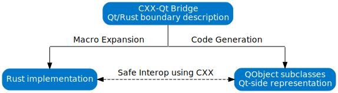

CXX-Qt - Safe interop between Rust and Qt
TLDR: Click here for "Getting Started" guide
This library provides a safe mechanism for bridging between Qt code and Rust code differently from typical Rust Qt bindings.
We acknowledge that Qt code and Rust code have different idioms so cannot be directly wrapped from one to another.
Instead of one-to-one bindings we use CXX to bridge between, this allows for normal Qt code and normal Rust code.
We feel this is more powerful than typical bindings as this allows us to provide a safe API and safe multi-threading between Qt and Rust.
To aid integration of Qt and Rust code we provide common Qt types for Rust which can pass across the bridge and provide ways to express common Qt idioms.
Through the use of macros and code generation as seen in the figure below, the developer describes a QObject with CXX-Qt macro annotations. Then CXX-Qt generates the C++ representation of the object and uses macro expansion to define the CXX bridge for interop between C++ and Rust.

If you are new to CXX-Qt, we recommend you visit our Getting Started Guide.
To get detailed information on which features are available in CXX-Qt, see the bridge chapter. Should you be interested in a deeper dive into the concepts of CXX-Qt, take a look at the concepts chapter, which explains the concepts CXX-Qt introduces in detail.
📝 Note: CXX-Qt is tested on CI on Linux, Windows, and macOS (all on x86_64). wasm32 is compiled, but not tested on CI. It should work on other platforms that Qt and Rust both support, however, these are not tested regularly.
CXX-Qt - Getting Started
In comparison to other Qt-Rust-bindings, CXX-Qt does not aim to simply expose Qt functionality to Rust, but rather to completely integrate Rust into the Qt ecosystem.
In this guide we'll go through a minimal example that uses CXX-Qt to create your own QObject in Rust and integrate it with a small QML-based GUI.
Prerequisites
This guide won't be able to explain everything to you, but it will try its best to make sure everyone can follow along. However, there are a few things you should be familiar with before reading this guide. It may be confusing otherwise!
Firstly, you should be familiar with Rust. There are many great resources for learning Rust, like the book.
As CXX-Qt aims to integrate Rust into the existing Qt ecosystem, you should have basic knowledge of Qt and QML. If you're not familiar with Qt/QML yet, take a look at the Qt Getting started guide or the QML intro respectively.
CXX-Qt (as the name suggests) is built on top of CXX. You should have a basic idea of how CXX works before attempting to follow this guide. Take a look at the CXX documentation here: https://cxx.rs/
Installation
You'll need to have the following tools installed:
- A working C/C++ compiler
- CMake version 3.24 or above
- The Rust toolchain
- Qt 5 or Qt 6 - the open source version will do just fine
⚠️ It is vital that the
qmakeexecutable can be found by CXX-Qt. On Windows, you may have to manually add it to yourPATHin order for this to work automatically.To check that
qmakecan indeed be found, run:$ qmake --version QMake version 3.1 Using Qt version 6.5.1 in /usr/lib64If you don't want to add
QMAKEto your path you can always provide Cargo with the right path by using theQMAKEenvironment variable.
e.g.:QMAKE=/usr/bin/qmake cargo build
We unfortunately cannot list every way to install these tools on all platforms. Please make sure you have installed the right toolchains before following this guide!
What this guide covers
During this getting started guide we'll first take a look at how CXX-Qt integrates with Qt's object system to allow the definition of QObjects in Rust.
Then we'll dive straight into practice and define our first QObject in Rust.
Followed by actually defining our GUI using QML.
We will show two different ways to build the project. First we will build the CXX-Qt code as a Rust executable without requiring a C++ build system. Additionally, we will show how to integrate CXX-Qt into a C++ application by building with CMake.
📝 Note: CXX-Qt is tested on CI on Linux, Windows, and macOS (all on x86_64). wasm32 is compiled, but not tested on CI. It should work on other platforms that Qt and Rust both support, however, these are not tested regularly.
So, without further ado - let's Get Started
QObjects in Rust
The right tool for the right job.
If you only have a hammer, every problem looks like a nail.
Don't bring a knife to a gun fight.
There are many bits of advice like that. With CXX-Qt, we aim to make it possible to use the right tool for each of the many jobs necessary to build a modern GUI application.
So what is in our toolbox for a typical Qt application?
- QML - A declarative, flexible, dynamically-typed, interpreted language that is purpose built to define reactive and beautiful GUI layouts and widgets with quick iteration speed.
- C++ - The traditional back-end of Qt - A fast, low-level language with a strong type system. C++ offers a rich ecosystem, many Qt-specific libraries and bare-metal performance. The cost when using C++ is that it is slow to develop, very error-prone and can easily lead to memory-issues, which can instantly crash your application and cause security issues.
Notably absent then is a back-end language that allows us to get rid of the issues C++ has and provides us with a safe way to write high-performance back-end code. This of course is where Rust comes in. Rust offers a similar level of control and performance, but without many of the downsides of C++. Whilst Rusts ecosystem is still maturing, it is typically faster to develop than C++, with easy dependency management, and most importantly, safe memory access. Therefore, it is an ideal candidate to replace C++ for writing the back-end business-logic code that feeds the GUI with data.
However, C++ as well as QML still have their place in Qt applications. For that reason Rust, C++, and QML should all be able to be used to complement each other. CXX-Qt aims to make it easy to integrate all three languages with each other, through the use of Qt's meta-object system and CXX.
As CXX-Qt is largely an expansion on top of CXX, you should make yourself familiar with CXX first. You can read their excellent documentation here:
CXX already provides idiomatic interaction between C++ and Rust, from Rust, as well as from C++. CXX-Qt builds on this foundation, to allow you to define Qt-specific concepts in Rust.
These concepts include:
- Custom
QObjectclasses- Properties
- Invokables/Slots
- Signals
- Inheritance and overriding
- Enums (
QEnum) - Namespaces (
QNamespace)
As with CXX, to use these features you mark a Rust module with an attribute macro (#[cxx_qt::bridge]).
Inside this bridge, you then describe the bidirectional interface between your C++/Qt and Rust code.
CXX-Qt will then expand this Rust bridge into two separate parts:
- C++ files that define
QObjects, enums etc. and expose them to Qt's meta-object-system. - The Rust code which provides the Rust implementation of the described structures, as well as interfaces to any C++/Qt constructs you declared.
Rust structs as QObjects
Similar to CXX, CXX-Qt allows you to expose Rust structs as a new type to C++.
However, CXX-Qt expands this feature to allow you to create a new QObject subclass that is backed by a Rust struct.
In comparison to a normal opaque CXX class, the mapping between the QObject subclass and the Rust struct is not 1:1!
The QObject subclass is its own type in Rust, as well as in C++.
When such a QObject is instantiated, it will always also construct an instance of the Rust struct.
The QObjects Rust struct can also be directly constructed via a UniquePtr<YourObject> in Rust, but this is a less common use case,
see Instantiating in Rust for more information.
The QObject can then refer to the underlying Rust struct for property access.
Any behavior of this QObject subclass will also be defined in Rust, e.g. using the #[qinvokable] attribute.
The Rust implementation also has access to the underlying Rust struct to modify any Rust data.
In comparison to most CXX types, the outer QObject class and the inner Rust struct will remain two distinct types!
But enough theory for now, let's jump in and write our first CXX-Qt module.
Our first CXX-Qt module
As with all things Rust, we'll want to create a cargo project.
Run the following command inside a tutorial folder to initialize the Rust part of the project.
$ cargo new qml_minimal
$ cd qml_minimal
If you want to skip building with Cargo and try building with CMake directly you can add the
--liboption here. That will make it easier to create a static library in Rust and use CMake to link this into a C++ executable. We'll discuss details of this later, when we integrate our Rust project with CMakeBuilding with Cargo is easier to start with, so if in doubt, try building with Cargo first.
As outlined in the previous section, to use CXX-Qt, we'll create a Rust module within this crate.
This Rust module will then serve as our interface between Qt and Rust.
First, in the src/main.rs, we tell Cargo about the module we're about to create:
pub mod cxxqt_object;Now, we need to create a file rust/src/cxxqt_object.rs for that module.
It will include our #[cxx_qt::bridge] that allows us to interact with Qt concepts.
This is a lot to take in, so let's go one step at a time.
/// The bridge definition for our QObject
#[cxx_qt::bridge]
pub mod qobject {
unsafe extern "C++" {
include!("cxx-qt-lib/qstring.h");
/// An alias to the QString type
type QString = cxx_qt_lib::QString;
}
extern "RustQt" {
// The QObject definition
// We tell CXX-Qt that we want a QObject class with the name MyObject
// based on the Rust struct MyObjectRust.
#[qobject]
#[qml_element]
#[qproperty(i32, number)]
#[qproperty(QString, string)]
#[namespace = "my_object"]
type MyObject = super::MyObjectRust;
// Declare the invokable methods we want to expose on the QObject
#[qinvokable]
#[cxx_name = "incrementNumber"]
fn increment_number(self: Pin<&mut Self>);
#[qinvokable]
#[cxx_name = "sayHi"]
fn say_hi(&self, string: &QString, number: i32);
}
}
use core::pin::Pin;
use cxx_qt_lib::QString;
/// The Rust struct for the QObject
#[derive(Default)]
pub struct MyObjectRust {
number: i32,
string: QString,
}
impl qobject::MyObject {
/// Increment the number Q_PROPERTY
pub fn increment_number(self: Pin<&mut Self>) {
let previous = *self.number();
self.set_number(previous + 1);
}
/// Print a log message with the given string and number
pub fn say_hi(&self, string: &QString, number: i32) {
println!("Hi from Rust! String is '{string}' and number is {number}");
}
}
CXX-Qt bridge module
Starting with the module definition:
/// The bridge definition for our QObject
#[cxx_qt::bridge]
pub mod qobject {
// ...
}A #[cxx_qt::bridge] is the same as a #[cxx::bridge] and you can use all features of CXX in it.
Additionally, a #[cxx_qt::bridge] gives you a few more features that allow you to create QObjects from Rust or declare existing QObjects for access from Rust.
extern "RustQt"
Like extern "Rust" and extern "C++" in CXX, CXX-Qt provides extern "RustQt" and extern "C++Qt".
These extern blocks instruct CXX-Qt to where the implementation of our interface lives.
Anything that is marked as extern "RustQt" is implemented in Rust and will be exposed to C++.
Conversely, anything inside extern "C++Qt" is implemented in C++ and will be exposed to Rust.
QObject struct
First we will create a new QObject subclass.
As we want to implement it in Rust, we need to place our interface inside extern "RustQt".
To create a new QObject subclass that will be defined in Rust, use a type-alias and mark it with #[qobject].
In our case the new class will be named MyObject and will be backed by a Rust struct named MyObjectRust.
// The QObject definition
// We tell CXX-Qt that we want a QObject class with the name MyObject
// based on the Rust struct MyObjectRust.
#[qobject]
#[qml_element]
#[qproperty(i32, number)]
#[qproperty(QString, string)]
#[namespace = "my_object"]
type MyObject = super::MyObjectRust;The Rust struct must be defined outside the bridge module and is therefore referred to using super::.
This just needs to be a normal Rust struct and can contain any kind of field, even Rust-only types that are not compatible with CXX.
Unless we want to use CXX-Qt's Constructor feature we just need to ensure that this struct implements Rusts Default trait
In this case we can just use #[derive(Default)] on the struct.
#[derive(Default)]
pub struct MyObjectRust {
number: i32,
string: QString,
}Now the #[qobject] macro will take care of creating a new QObject subclass named MyObject.
Every instance of MyObject will include an instance of the MyObjectRust struct that can be used to work with data defined in Rust.
To automatically export this new class to QML, we mark it with the #[qml_element] attribute.
This is the same as specifying QML_ELEMENT in C++.
We later define a QML module for our type when building with Cargo or CMake.
The #[qproperty] attribute will create a Q_PROPERTY for the given type and field name.
CXX-Qt will then:
- Create the
Q_PROPERTYon theQObjecttype. - Create a
NOTIFYsignal for when the property changes. - Generate getters and setters that use the underlying Rust fields and emit the NOTIFY signal on changes.
In this case the newly created QObject subclass will have two properties: number and string.
CXX-Qt expects a field for each property to exist in the underlying Rust struct.
For names that contain multiple words, like my_number, CXX-Qt allows you to rename the property in C++ with a custom cxx_name or rust_name. See the property documentation for more information.
Types
Please note that any fields exposed as #[qproperty] must have types that CXX can translate to C++ types.
In our case that means:
#[qproperty(i32, number)]⇾Q_PROPERTY(::std::int32_t number ...)#[qproperty(QString, string)⇾Q_PROPERTY(QString string ...)
For i32, CXX already knows how to translate it.
A QString however is unknown to CXX.
Luckily, the cxx_qt_lib crate already wraps many Qt types for us.
We can just include them in the bridge like any other CXX type:
unsafe extern "C++" {
include!("cxx-qt-lib/qstring.h");
/// An alias to the QString type
type QString = cxx_qt_lib::QString;
}For more details on the available types, see the Qt types page.
With our completed QObject definition, CXX-Qt will automatically generate a new QObject subclass called MyObject and expose it as an extern "C++" opaque type back to Rust.
In our case, this means we can refer to the C++ QObject as qobject::MyObject, as it is defined inside the mod qobject.
This qobject::MyObject type can be used like any other CXX opaque type.
Invokables
Additionally, CXX-Qt allows us to add functionality to this QObject by referring to the type as the self type of functions in an extern "RustQt" block.
// Declare the invokable methods we want to expose on the QObject
#[qinvokable]
#[cxx_name = "incrementNumber"]
fn increment_number(self: Pin<&mut Self>);
#[qinvokable]
#[cxx_name = "sayHi"]
fn say_hi(&self, string: &QString, number: i32);This works the same as exposing any other member function with CXX in an extern "Rust" block.
Additionally, CXX-Qt understands the #[qinvokable] attribute and marks the member function as Q_INVOKABLE.
This means they can be called from QML.
These functions then need to be implemented outside the bridge using impl qobject::MyObject.
impl qobject::MyObject {
/// Increment the number Q_PROPERTY
pub fn increment_number(self: Pin<&mut Self>) {
let previous = *self.number();
self.set_number(previous + 1);
}
/// Print a log message with the given string and number
pub fn say_hi(&self, string: &QString, number: i32) {
println!("Hi from Rust! String is '{string}' and number is {number}");
}
}
Inlining the self receiver
If an extern "RustQt" block contains exactly one QObject, the self type of methods can be inferred.
For instance, in a block with multiple or no QObjects, a function like foo(&self) or foo(self: Pin<&mut Self>)
would not compile, but will compile with the Self type set to that blocks QObject.
This is how CXX handles it (see the Methods heading).
This setup is a bit unusual, as the type qobject::MyObject is actually defined in C++.
However, it is still possible to add member functions to it in Rust and then expose them back to C++.
This is the usual workflow for QObjects in CXX-Qt.
CXX-Qt will define the QObject class itself in C++, but defer to Rust for any behavior.
📝 Best Practice: We recommend calling the bridge module
qobjectinstead of the CXX-typicalffi. This way accessing the C++QObjectoutside the bridge becomes a naturalqobject::MyObjectinstead offfi::MyObject.Feel free to choose any module name you like though.
Also do not forget to import everything required for the invokable implementation.
use core::pin::Pin;
use cxx_qt_lib::QString;In our case, we define two new functions:
increment_number- Increments the number of the
MyObject. - The name will be converted to
incrementNumberin C++.
- Increments the number of the
say_hello- Prints a provided number and string.
- The name will be converted to
sayHelloin C++.
Because we are implementing on the qobject::MyObject type instead of the MyObject type, self here is the C++ QObject that is generated from our MyObject struct.
As this type is a CXX Opaque type, we can't actually instantiate it.
Our Qt code will take care of this.
Also, we can't move the QObject, which is why it is behind a Rust Pin.
CXX-Qt will generate getters and setters for all properties of our struct.
That's where the number() and set_number() functions used by increment_number() come from.
See the QProperty section for details on user defined properties.
For more details on what you can do with the QObject from Rust and what functions CXX-Qt will generate for you, take a look at the QObject page.
And that's it. We've defined our first QObject subclass in Rust. That wasn't so hard, was it?
Now let's get to using it in Qt.
Creating our QML GUI
As noted in the QObjects in Rust chapter, we always want to use "the right tool for the right job". For a small modern GUI in Qt, that definitely means using QML. It's powerful, flexible, declarative, and allows us to iterate very quickly.
So let's add a main.qml file in a qml folder:
import QtQuick 2.12
import QtQuick.Controls 2.12
import QtQuick.Window 2.12
// This must match the uri and version
// specified in the qml_module in the build.rs script.
import com.kdab.cxx_qt.demo 1.0
ApplicationWindow {
id: root
height: 480
title: qsTr("Hello World")
visible: true
width: 640
color: palette.window
readonly property MyObject myObject: MyObject {
number: 1
string: qsTr("My String with my number: %1").arg(number)
}
Column {
anchors.fill: parent
anchors.margins: 10
spacing: 10
Label {
text: qsTr("Number: %1").arg(root.myObject.number)
color: palette.text
}
Label {
text: qsTr("String: %1").arg(root.myObject.string)
color: palette.text
}
Button {
text: qsTr("Increment Number")
onClicked: root.myObject.incrementNumber()
}
Button {
text: qsTr("Say Hi!")
onClicked: root.myObject.sayHi(root.myObject.string, root.myObject.number)
}
Button {
text: qsTr("Quit")
onClicked: Qt.quit()
}
}
}
If you're not familiar with QML, take a look at the Qt QML intro. We of course also recommend our QML Intro Training and our Introduction to Qt/QML YouTube series.
This code will create a pretty simple GUI that consists of two Labels and two Buttons.
The important part here is the use of the MyObject type.
As you can see, the class we defined earlier is now usable in QML.
As it is just another QObject subclass, it can be used in Qt's property binding system, as is done with the myObject.string, which is bound to myObject.number.
The labels then simply display the data defined in the MyObject class.
We can use the two buttons to interact with the MyObject instance.
It is again important to emphasize here that MyObject is just another QObject subclass and can be used just like any other QObject subclass.
The only difference being that any invokable functions are defined in Rust, instead of C++.
For QML, this doesn't make a difference though.
Now that we have some application code, let's get this project building and running
Building with Cargo
In this example, we will demonstrate how to build the cxxqt_object.rs as well as any QML files using the Rust build system.
Cargo will do the entire build, including linking to Qt, just like a typical Rust application.
Note that the folder structure of this example is different to the CMake tutorial.
The CMake example uses a rust folder where the Rust part of the project resides in.
In this setup we'll stick with a standard Cargo folder layout with just the added qml folder next to the src folder.
The complete example code is available in examples/cargo_without_cmake
in the CXX-Qt repository.
If you don't want to use Cargo, and only want to use CMake to build your project, skip ahead to the next section.
Using a Cargo based setup is easier though, so if in doubt, try building with Cargo first.
Cargo setup
Add the dependencies to the Cargo.toml file.
We'll need cxx, cxx-qt, cxx-qt-lib and cxx-qt-build:
[package]
name = "qml_minimal"
version = "0.1.0"
authors = [
"Andrew Hayzen <andrew.hayzen@kdab.com>",
"Be Wilson <be.wilson@kdab.com>",
"Gerhard de Clercq <gerhard.declercq@kdab.com>",
"Leon Matthes <leon.matthes@kdab.com>"
]
edition = "2021"
license = "MIT OR Apache-2.0"
[dependencies]
cxx = "1.0.95"
cxx-qt = "0.8"
cxx-qt-lib = { version="0.8", features = ["qt_full"] }
[build-dependencies]
# The link_qt_object_files feature is required for statically linking Qt 6.
cxx-qt-build = { version = "0.8", features = [ "link_qt_object_files" ] }
Now we'll add a build.rs script next to the Cargo.toml file.
use cxx_qt_build::{CxxQtBuilder, QmlModule};
fn main() {
CxxQtBuilder::new_qml_module(QmlModule::new("com.kdab.cxx_qt.demo").qml_file("qml/main.qml"))
// Link Qt's Network library
// - Qt Core is always linked
// - Qt Gui is linked by enabling the qt_gui Cargo feature of cxx-qt-lib.
// - Qt Qml is linked by enabling the qt_qml Cargo feature of cxx-qt-lib.
// - Qt Qml requires linking Qt Network on macOS
.qt_module("Network")
.files(["src/cxxqt_object.rs"])
.build();
}This is what generates and compiles the C++ code for our MyObject class at build time.
It will also link Qt to our Rust binary.
Every Rust source file that uses the #[cxx_qt::bridge] macro needs to be included in this script.
In our case, this is only the src/cxxqt_object.rs file.
This is also where the QML module is defined with a QML URI and version.
The files and resources in the module are then exposed in the same way as the qt_add_qml_module CMake function.
Refer to the CxxQtBuilder
and cc::Build documentation for further details.
Rust executable
In src/main.rs, first import the cxxqt_object module and some types we will need to run our Qt application:
pub mod cxxqt_object;
use cxx_qt::casting::Upcast;
use cxx_qt_lib::{QGuiApplication, QQmlApplicationEngine, QQmlEngine, QUrl};
use std::pin::Pin;Define the main function that will be called when the executable starts. This works just like starting a QML
application in C++:
- Create a
QGuiApplication - Create a
QQmlApplicationEngine - Set the QML file path to the engine
- Run the application
fn main() {
// Create the application and engine
let mut app = QGuiApplication::new();
let mut engine = QQmlApplicationEngine::new();
// Load the QML path into the engine
if let Some(engine) = engine.as_mut() {
engine.load(&QUrl::from("qrc:/qt/qml/com/kdab/cxx_qt/demo/qml/main.qml"));
}
if let Some(engine) = engine.as_mut() {
let engine: Pin<&mut QQmlEngine> = engine.upcast_pin();
// Listen to a signal from the QML Engine
engine
.on_quit(|_| {
println!("QML Quit!");
})
.release();
}
// Start the app
if let Some(app) = app.as_mut() {
app.exec();
}
}To build and run the application, use cargo run.
📝 Note: In order for CXX-Qt to work, the
qmakeexecutable must be located. This is because CXX-Qt relies onqmaketo locate the necessary Qt libraries and header files on your system.
cxx-qtwill findqmakein the following order:
- Look for an environment variable
QMAKEthat should have the path toqmake.
e.g.:QMAKE=/usr/bin/qmake cargo run- Use
qmakefrom thePATH. If multipleqmakeexists inPATH, environment variableQT_VERSION_MAJORwill control the selected one.To check which version of Qt will be used with
qmake, you can use theqmake -querycommand. This will display information about the Qt installation, including the version number and installation path.Check
CxxQtBuilderfor more information
If this fails for any reason, take a look at the examples/cargo-without-cmake folder in the CXX-Qt repository, which contains the complete example code.
If you have cloned the CXX-Qt repository, you can run this example from within the repository using:
cargo run -p qml-minimal-no-cmake
You should now see the two Labels that display the state of our MyObject, as well as the two buttons to call our two Rust functions.
Success 🥳
For further reading, you can take a look at the bridge chapter which goes into detail about all features that CXX-Qt exposes to new QObject subclasses.
As well as the Concepts chapter, which explains the concepts underlying CXX-Qt.
In the next, optional chapter, we will show how to build the same QML application with CMake.
Building with CMake
In this example, we will demonstrate how to integrate CXX-Qt code into a C++ application using CMake. Cargo builds the CXX-Qt code as a static library, then CMake links it into a C++ executable.
If you don't want to use CMake, and only want to use Cargo to build your project, refer to the previous section.
We'll first want to modify our project structure to separate the different parts of our project.
tutorial
- cpp
- qml
- rust
Move the rust project into the rust folder.
Pull out the qml folder back to the top level.
C++ executable
To start our QML application, we'll need a small main.cpp file with an ordinary main function. Put this in a cpp folder to clearly separate the C++ and Rust code:
#include <QtGui/QGuiApplication>
#include <QtQml/QQmlApplicationEngine>
int
main(int argc, char* argv[])
{
QGuiApplication app(argc, argv);
QQmlApplicationEngine engine;
const QUrl url(
QStringLiteral("qrc:/qt/qml/com/kdab/cxx_qt/demo/qml/main.qml"));
QObject::connect(
&engine,
&QQmlApplicationEngine::objectCreated,
&app,
[url](QObject* obj, const QUrl& objUrl) {
if (!obj && url == objUrl)
QCoreApplication::exit(-1);
},
Qt::QueuedConnection);
engine.load(url);
return app.exec();
}
You can add as much C++ code as you want in addition to this.
Using Rust QObjects in C++
For every #[cxx_qt::bridge] that we define in Rust, CXX-Qt will generate a corresponding C++ header file.
To include any of the generated files, use the crates name as the include directory.
The name of the header file will be the folder names, combined with the input rust file name of your #[cxx_qt::bridge], followed by .cxxqt.h.
So in our case: #include <qml_minimal/src/cxxqt_object.cxxqt.h>
📝 Note: any folders relative to the
Cargo.tomlfile are considered hence thesrcfolder.
Including the generated header allows us to access the MyObject C++ class, just like any other C++ class.
Inherit from it, connect signals and slots to it, put it in a QVector, do whatever you want with it.
That's the power of CXX-Qt.
Cargo setup
Before we can get started on building Qt with CMake, we first need to make our Cargo build ready for it.
If you've generated your project with e.g. cargo new --lib qml_minimal or cargo init --lib [folder] command, your Cargo.toml should look something like this:
[package]
name = "qml_minimal"
version = "0.1.0"
edition = "2021"
[dependencies]
We'll have to do multiple things:
- Instruct cargo to create a static library
- Add
cxx,cxx-qt, as well ascxx-qt-libas dependencies - Add
cxx-qt-buildas a build dependency
If you've already followed the Cargo setup, most of this should already be done. Make sure to change the
crate-typeto"staticlib"though!
In the end, your Cargo.toml should look similar to this.
[package]
name = "qml_minimal"
version = "0.1.0"
authors = [
"Andrew Hayzen <andrew.hayzen@kdab.com>",
"Gerhard de Clercq <gerhard.declercq@kdab.com>",
"Leon Matthes <leon.matthes@kdab.com>"
]
edition = "2021"
license = "MIT OR Apache-2.0"
# This will instruct Cargo to create a static
# library which CMake can link against
[lib]
crate-type = ["staticlib"]
[dependencies]
cxx = "1.0.95"
cxx-qt = "0.8"
cxx-qt-lib = { version="0.8", features = ["qt_full"] }
[build-dependencies]
# The link_qt_object_files feature is required for statically linking Qt 6.
cxx-qt-build = { version = "0.8", features = [ "link_qt_object_files" ] }
We'll then also need to add a script named build.rs next to the Cargo.toml:
If you've already followed the Cargo build tutorial, simply modify the existing
build.rsfile.
use cxx_qt_build::{CxxQtBuilder, QmlModule};
fn main() {
CxxQtBuilder::new_qml_module(
QmlModule::new("com.kdab.cxx_qt.demo").qml_file("../qml/main.qml"),
)
.qt_module("Qml")
.files(["src/cxxqt_object.rs"])
.build();
}This is what generates and compiles the C++ code for our MyObject class at build time.
Every Rust source file that uses the #[cxx_qt::bridge] macro need to be included in this script.
In our case, this is only the src/cxxqt_object.rs file.
This is also where the QML module is defined with a QML URI and version. The files and resources in the module are then exposed in the same way as the qt_add_qml_module CMake function.
Note that in order for CXX-Qt to work, the
qmakeexecutable must be located. This is because CXX-Qt relies onqmaketo locate the necessary Qt libraries and header files on your system.Usually, the CMake code that CXX-Qt provides you to import a crate should already take care of this.
To overwrite the path to qmake, you may pass the
QMAKEoption to cxx_qt_import_crate, ensuring that CMake and Cargo use the same Qt binaries.
We'll also need to remove the src/main.rs and replace it with a src/lib.rs file.
This file only needs to include a single line:
pub mod cxxqt_object;This simply ensures that our rust module is included in our library.
Feel free to add additional rust modules in your library as well.
CMake setup
Now add a CMakeLists.txt file in the root of your project folder.
Start the CMakeLists.txt file like any other C++ project using Qt.
For this example, we are supporting both Qt5 and Qt6 with CMake:
cmake_minimum_required(VERSION 3.24)
project(example_qml_minimal)
# Rust always links against non-debug Windows runtime on *-msvc targets
# Note it is best to set this on the command line to ensure all targets are consistent
# https://github.com/corrosion-rs/corrosion/blob/master/doc/src/common_issues.md#linking-debug-cc-libraries-into-rust-fails-on-windows-msvc-targets
# https://github.com/rust-lang/rust/issues/39016
if (CMAKE_CXX_COMPILER_ID STREQUAL "MSVC")
set(CMAKE_MSVC_RUNTIME_LIBRARY "MultiThreadedDLL")
endif()
set(CMAKE_AUTOMOC ON)
set(CMAKE_CXX_STANDARD 17)
set(CMAKE_CXX_STANDARD_REQUIRED ON)
set(CXXQT_QTCOMPONENTS Core Gui Qml QuickControls2 QuickTest Test)
set(CXXQT_QTCOMPONENTS ${CXXQT_QTCOMPONENTS} QmlImportScanner)
if(NOT USE_QT5)
find_package(Qt6 COMPONENTS ${CXXQT_QTCOMPONENTS})
set(Qt "Qt6")
endif()
if(NOT Qt6_FOUND)
find_package(Qt5 5.15 COMPONENTS ${CXXQT_QTCOMPONENTS} REQUIRED)
set(Qt "Qt5")
endif()
if(MSVC)
# Qt also needs to link against the non-debug version of the MSVC Runtime libraries.
# Note: The Qt:: targets are ALIAS targets that do not support setting properties directly.
# We therefore need to resolve the target names to either Qt5 or Qt6 directly.
set_property(
TARGET ${Qt}::Core ${Qt}::Gui ${Qt}::Qml ${Qt}::QuickControls2 ${Qt}::QuickTest ${Qt}::Test
PROPERTY MAP_IMPORTED_CONFIG_DEBUG "RELEASE")
endif()
Download CXX-Qts CMake code with FetchContent:
find_package(CxxQt QUIET)
if(NOT CxxQt_FOUND)
include(FetchContent)
FetchContent_Declare(
CxxQt
GIT_REPOSITORY https://github.com/kdab/cxx-qt-cmake.git
GIT_TAG 0.8.0
)
FetchContent_MakeAvailable(CxxQt)
endif()
This provides you with a few wrappers around Corrosion, a tool for integrating Rust libraries into CMake:
cxx_qt_import_crate- A wrapper around corrosion_import_crate. It supports the same arguments as corrosion_import_crate, with three new arguments:QT_MODULES(required) - The Qt modules to link to. Specify the corresponding CMake targets here.CXX_QT_EXPORT_DIR(optional) - Manually specify the path where CXX-Qt artifacts will be exported to.- This is usually not necessary. However, if you're importing the same crate with different feature sets in the same CMake build configuration, you will need to specify seperate
CXX_QT_EXPORT_DIRs to avoid multiple versions of the crate exporting to the same directory.
- This is usually not necessary. However, if you're importing the same crate with different feature sets in the same CMake build configuration, you will need to specify seperate
QMAKE(optional) - Override the path to the QMAKE executable
cxx_qt_import_qml_module- This function imports a QML modules as a new target. It requires the following arguments:TARGET_NAME- Specify the name of the CMake target that this function will createURI- The URI of the qml module to import - this needs to exactly match the URI in theCxxQtBuilder::qml_modulecall in your build script.SOURCE_CRATEThe crate that exports the QML module (this crate must have been imported withcxx_qt_import_crate).
# CXX-Qt (using Corrosion) creates a CMake target with the same name as the crate.
cxx_qt_import_crate(
MANIFEST_PATH rust/Cargo.toml
CRATES qml_minimal
LOCKED
QT_MODULES Qt::Core Qt::Gui Qt::Qml Qt::QuickControls2
)
cxx_qt_import_qml_module(qml_minimal_qml_module
URI "com.kdab.cxx_qt.demo"
SOURCE_CRATE qml_minimal)
This will create two new CMake targets:
qml_minimal- The static library exported by our crateqml_minimal_qml_module- The QML Module exported by our crate- The
_qml_moduletarget will automatically link to theqml_minimaltarget, so linking to the_qml_moduleis sufficient for our executable target
- The
Finally, we can create the CMake executable target and link it to our crate:
add_executable(example_qml_minimal cpp/main.cpp)
# Link to the qml module, which in turn links to the Rust qml_minimal library
target_link_libraries(example_qml_minimal PRIVATE qml_minimal_qml_module)
# If we are using a statically linked Qt then we need to import any qml plugins
qt_import_qml_plugins(example_qml_minimal)
Your project should now have a structure similar to this:
$ tree -I target/ -I tests
.
├── CMakeLists.txt
├── cpp
│ └── main.cpp
├── qml
│ └── main.qml
└── rust
├── build.rs
├── Cargo.toml
└── src
├── cxxqt_object.rs
└── lib.rs
5 directories, 7 files
Build the project like any other CMake project:
$ cmake -S . -B build
$ cmake --build build
If this fails for any reason, take a look at the examples/qml_minimal folder, which contains the complete example code.
This should now configure and compile our project. If this was successful, you can now run our little project.
$ ./build/examples/qml_minimal/example_qml_minimal
You should now see the two Labels that display the state of our MyObject, as well as the two buttons to call our two Rust functions.
Windows with MSVC
MSVC provides multiple versions of its runtime library. Unfortunately the Debug and Release versions are not binary compatible. The recommendation by Microsoft is to not mix different runtimes.
See also: https://learn.microsoft.com/en-us/cpp/c-runtime-library/crt-library-features?view=msvc-170
Currently, Rust by default links to the Multi-Threaded Release DLL runtime. This is a mismatch with the default CMake MSVC Debug configurations, which uses the Multi-Threaded Debug DLLs.
To resolve this mismatch, we currently recommend to stick with the Multi-Threaded Release DLL runtime (/MD) for the entire program!
For CMake, make sure to call set(CMAKE_MSVC_RUNTIME_LIBRARY "MultiThreadedDLL") (or use the -DCMAKE_MSVC_RUNTIME_LIBRARY=MultiThreadedDLL flag) when building with the Debug configuration.
See also the Corrosion documentation.
Additionally, the Qt Debug DLLs also use the Debug runtime.
We can force Qt to use the Release DLLs instead in the Debug configuration by setting the MAP_IMPORTED_CONFIG_DEBUG property to "RELEASE" on all Qt components that are linked into the final binary.
# Note: The Qt:: targets are ALIAS targets that do not support setting properties directly.
# We therefore need to resolve the target names to either Qt5 or Qt6 directly.
set_property(
TARGET Qt6::Core Qt6::Gui Qt6::Qml Qt6::Test Qt6::QuickControls2
PROPERTY MAP_IMPORTED_CONFIG_DEBUG "RELEASE")
We hope that in the future the Rust ecosystem can be configured to use the Debug runtime, so that these additional configurations are not necessary.
Note: These issues do not apply to Cargo-only builds, as these always use the Release runtime and Release Qt DLLs.
Core Concepts
CXX-Qt uses CXX for bridging between C++ and Rust safely.
The main purpose of CXX-Qt is to expose Qt's extensions to the C++ language to CXX.
- Supported types between Rust and C++
- Build Systems
- Generated QObject
- Nesting Rust objects
- Inheriting
QObjectsand overriding methods
Build Systems
CXX-Qt can be integrated into existing CMake projects or built with only cargo. The getting started guide provides documentation on how to set up your project:
CXX-Qt could work with any C++ build system so long as the QMAKE, CXX_QT_EXPORT_DIR and CXX_QT_EXPORT_CRATE_<CRATE-NAME> environment variables are set before calling Cargo.
Take a look at our CMake code for how this can be used.
However, using C++ build systems besides Cargo or CMake with CXX-Qt is untested and the use of these environment variables is SemVer-exempt!
For information on building for WebAssembly (wasm), see: Building for Webassembly
CxxQtBuilder
With both build systems a build script (build.rs) file needs to be used,
so that CXX-Qt knows which files to look for bridges and to build a Qt C++ library for linking later.
See CxxQtBuilder documentation for more details.
QML Modules
When using QML with CXX-Qt QML modules can be output.
This allows for attributes such as #[qml_element] to register the QObject with the QML type system without any C++ code.
See QmlModule documentation for more details.
Dynamic QML module plugins
Qt allows building QML modules into dynamic plugins that are loaded on-demand at runtime.
By default, CXX-Qt uses static QML plugins, which are linked directly into the application. As Rust prefers static linking in general, we recommend sticking with this approach when using CXX-Qt.
However, if you really need a dynamic QML plugin, CXX-Qt supports generating them with CMake only. For an example, see the qml_minimal_plugin example in the CXX-Qt repository.
To build a dynamic QML module plugin, start with a normal static QML module, then make sure you have taken these steps:
- Set the
crate-typetocdylibin your Cargo.toml - Pass
PluginType::DynamictoQtModule::plugin_typein your Rust build script - Make sure you are using
cxx_qt_import_qml_modulein CMake with the correctOUTPUT_DIROUTPUT_DIRshould be the directory of the main application binary, not the plugin library- Note: The
OUTPUT_DIRdefaults to theCMAKE_CURRENT_BINARY_DIR
- Build the QML module target separately (
cmake --build /path/to/build/should build it by default) - Your main binary no longer needs to link to the QML plugin
In this case, CXX-Qt generates one large dynamic library for the plugin and your Rust code. Similar to this case described in the Qt documentation. Whenever QML code is loaded that references your QML module, it will be loaded automatically.
⚠️ Note: If your QML module contains paths above your Cargo.toml (e.g.
../qml/MyObject.qml), they will not be exported correctly to tools like qmllint/qmlls. In general, we do not recommend to structure QML modules this way, as the directory structure in QRC will then include files outside the actual module directory. Some of our own examples use this structure for historical reasons - in that case: do as we say, not as we do 😅!This issue only affects dynamic QML module plugins, but we still recommend to avoid this pattern for static QML modules.
QML Language Server (qmlls)
When using QML modules within a build.rs script CXX-Qt will automatically create a .qmlls.ini file, if one does not already exist, in the folder containing your Cargo.toml.
This informs any qmlls instance running in child directories where to find the build directory.
Note that if your QML files are in a parent or sibling folder you may need to copy or symlink the
.qmlls.inior create your own
QML Lint (qmllint)
When using QML modules .qmltypes information is exported to the build folder which allows for both qmllint and qmlls to understand the types.
For qmllint this can be executed successfully by adding the cxxqt/qml_modules folder from the build directory to the QML import paths with the -I flag.
qmllint -I /path/to/cxxqt/qml_modules /path/to/test.qml
When using CMake the folder is
${CMAKE_CURRENT_BINARY_DIR}/cxxqt/qml_modulesand when using Cargo the folder istarget/cxxqt/qml_modules.
Building for WebAssembly
CXX-Qt and applications written with it can be compiled for WebAssembly, with a few limitations. Below you will find detailed instructions regarding how to build for the WASM target.
You will need to have Qt for WebAssembly installed. The next section shows versions that have been tested.
Additionally, if you haven't already, clone the emsdk git repo from Github.
Using Correct Versions
The version of Emscripten used to build CXX-Qt and programs using it should match the one that was used to build Qt for WebAssembly. This is because Emscripten does not guarantee ABI compatibility between versions, so using different versions is not guaranteed to work fully or even at all.
Here are the associated Qt and Emscripten versions, and whether they are currently working with CXX-Qt for WebAssembly:
| Qt | Emscripten |
|---|---|
| 6.2 | 2.0.14 |
| 6.3 | 3.0.0 |
| 6.4 | 3.1.14 |
| 6.5 | 3.1.25 |
| 6.6 | 3.1.37 |
Info about other Qt and emscripten versions can be found in the Qt documentation.
Setting Up emsdk
Once you know which Qt and Emscripten versions you will use, navigate to the root directory of the emsdk repo and run the following commands:
$ ./emsdk install <emscripten version>
$ ./emsdk activate <emscripten version>
$ source ./emsdk_env.sh
For example, if you are going to use Qt 6.4, the corresponding version of Emscripten is 3.1.14, so the first command will be:
$ ./emsdk install 3.1.14
On Windows, the third step, which sets up environment variables (source command above on Unix-like environments) is unnecessary because the required environment setup will already be done.
Toolchains
When configuring with CMake, the CMAKE_TOOLCHAIN_FILE variable needs to be set to the correct toolchain file; for example, if using Qt 6.4.2 on WebAssembly, the toolchain file is typically located at /path/to/Qt/6.4.2/wasm_32/lib/cmake/Qt6/qt.toolchain.cmake. This will set CMake up to use the correct Qt path, compiler, linker, and so forth.
Generally, this does not need to be done manually. Using the qt-cmake binary bundled with your selected version of Qt WASM will set the toolchain file for you.
For example, if using Qt 6.4.2:
$ /path/to/Qt/6.4.2/wasm_32/bin/qt-cmake -B build .
However, in Qt 6.3 and below, the bundled CMake is version 3.22, while CXX-Qt requires at least version 3.24. For these versions of Qt, a more up-to-date CMake binary needs to be used to configure, so CMAKE_TOOLCHAIN_FILE needs to be passed into the cmake command.
If using a different CMake binary, instead do this:
$ cmake -DCMAKE_TOOLCHAIN_FILE=/path/to/qt.toolchain.cmake -B build .
For Qt 6.5 or later, use the wasm_singlethread toolchain. For versions earlier than 6.5 use wasm_32.
The wasm_multithread toolchain available in 6.5 and later is currently not supported. For more information, see the Known Issues section at the bottom of this page.
Compiling Your Project for WebAssembly
To build for WebAssembly in a project that uses CXX-Qt crates, first follow the instructions in the Using Correct Versions and Setting Up emsdk sections.
CMakeLists.txt
When compiling a CXX-Qt project for wasm, the Rust target must be set to wasm32-unknown-emscripten, and the project must be configured to use POSIX threads. Make sure you have the Emscripten target for rustc with rustup target add wasm32-unknown-emscripten.
set(Rust_CARGO_TARGET wasm32-unknown-emscripten)
set(THREADS_PREFER_PTHREAD_FLAG ON)
find_package(Threads REQUIRED)
Any Rust crate that is imported via corrosion needs to have -DRUST_CXX_NO_EXCEPTIONS set otherwise cxx fails to build.
if(BUILD_WASN)
# Add -DRUST_CXX_NO_EXCEPTIONS to CXXFLAGS, as WASM does not support exceptions
set(EMSCRIPTEN_CXX_FLAGS "${CMAKE_CXX_FLAGS}")
list(APPEND EMSCRIPTEN_CXX_FLAGS "-DRUST_CXX_NO_EXCEPTIONS")
corrosion_set_env_vars(${CRATE} "CXXFLAGS=${EMSCRIPTEN_CXX_FLAGS}")
endif()
Using CMake, add_executable will not output an HTML file when targeting wasm. In order to render an HTML file, one must use qt_add_executable in its place. Assuming a project has a CMake flag BUILD_WASM to toggle wasm and native builds, one could write the following:
if(BUILD_WASM)
qt_add_executable(${APP_NAME} ${SOURCE_FILES})
else()
add_executable(${APP_NAME} ${SOURCE_FILES})
endif()
Configure, Build, and Run
Configure your build directory following the instructions in the Toolchains section.
Now, run cmake --build on the build directory to compile and link the project. This can be any CMake binary; here the OS package works just fine:
$ cmake --build build
You can then run your built application like so:
$ emrun ./build/path/to/<appname>.html
Compiling CXX-Qt WASM from Source
If you are compiling CXX-Qt from source, the workflow is similar. First, follow the instructions in the Using Correct Versions and Setting Up emsdk sections.
The CMakeLists.txt file at the root of the CXX-Qt repository has an option BUILD_WASM to toggle WebAssembly builds. Simply compiling with the correct emsdk and toolchain and flipping this option ON should build the libraries and examples for WebAssembly.
Building
Read the Toolchains section before proceeding. Then navigate to the root directory of the CXX-Qt repo.
If using the qt-cmake binary packaged with your version of Qt for WebAssembly, run the following command to configure CXX-Qt:
$ /path/to/qt-cmake -DBUILD_WASM=ON -B build .
If using a different CMake binary, instead do this:
$ <cmake binary> -DCMAKE_TOOLCHAIN_FILE=/path/to/qt.toolchain.cmake -DBUILD_WASM=ON -B build .
Finally, run cmake --build on the configured build directory to compile and link the project and examples. This can be any CMake binary; here the OS package works just fine:
$ cmake --build build
Then you can run the qml_minimal example like so:
$ emrun ./build/examples/qml_minimal/example_qml_minimal.html
Working Examples
Not all of the examples are currently supported for WASM builds.
| Example | Working |
|---|---|
qml-minimal-no-cmake | ❌ broken |
demo_threading | ❌ broken |
qml_features | ✅ working |
qml_minimal | ✅ working |
For more information, see the Known Issues section at the bottom of this page.
Known Issues
wasm_multithread toolchain
CXX-Qt will currently not build with wasm_multithread versions of Qt.
wasm-ld: error: --shared-memory is disallowed by qml_minimal-e6f36338b0e1fa5c.17g6vcid2nczsjj0.rcgu.o
because it was not compiled with 'atomics' or 'bulk-memory' features.
This issue is related to pthread in the libc crate. It is possible that manually compiling cxx and libc crates with -pthread may solve this.
cargo-only builds
The example qml-minimal-no-cmake will not build for WebAssembly with cargo, and attempts to build with cargo without cmake will not work. This is due to an upstream issue with the libc crate, which does not support wasm and can cause breakage.
cannot find function `pthread_kill` in crate `libc`
demo_threading example
The example demo_threading will not build for WebAssembly due to an upstream issue with async-std, which does not support wasm. On Linux, the observed breakage is due to socket2 using its unix.rs file to target a Unix rather than wasm environment, resulting in error messages from unix.rs like the following:
error[E0433]: failed to resolve: use of undeclared type `IovLen`
socket2 is a dependency of async-io, which is a dependency of async-std.
There is discussion around supporting wasm in the GitHub repository for async-std, and the progress is being tracked in this issue.
The generated QObject
One of the key features of CXX-Qt is the ability to create your own QObjects from Rust.
This is what the #[qobject] macro is for.
This page serves to document the details of what is generated and how to interact with the generated QObject from Rust.
The #[qobject] macro generates a QObject for a type alias to a Rust struct.
Whilst this QObject is a C++ type, CXX-Qt will automatically wrap it as a CXX Opaque Type.
If the bridge module is named
qobject, then the C++ type can be reached viaqobject::T
Anatomy
Any QObject generated by CXX-Qt is just a C++ QObject subclass that owns an instance of the Rust struct.
By default, the instance of the Rust struct is constructed using the Default trait.
If the Rust struct cannot implement Default, providing a custom constructor with the Constructor trait is required.
The C++ object will defer any state to the Rust struct, and is therefore only a thin wrapper.
📝 Note: The inner Rust struct of the QObject is owned by that QObject. So when the C++ object is destructed the inner Rust struct will be dropped as well.
See
extern "RustQt"for details on implementing properties, invokables, and signals.
See nested objects for referencing another
QObject.
C++ context
When implementing methods in the C++ context (e.g. for invokables) these need to be implemented on the type defined in the bridge.
For example, if the bridge module was called qobject and the type was called T, an impl block would be written as impl qobject::T { ... }.
Methods from traits, such as
Threading, are available in the C++ context
From a C++ context the Rust context can be reach by using methods on the
CxxQtTypetrait
Rust context
The only requirement for the Rust struct is that it has a Default or that the QObject implements cxx_qt::Constructor.
Otherwise, the Rust struct can be used in the same way as any normal Rust struct.
Types
CXX-Qt supports most types supported by CXX. These can be used in properties, invokables, and signals.
cxx-qt-lib Types
The cxx-qt-lib crate provides CXX bindings for common Qt types.
Use the cxx-qt-lib Docs to explore the available types.
Container Types
The cxx-qt-lib crate has containers types, such as QSet<T>.
To use these define a templated type in the CXX bridge, but note that the type
name must be QSet_T as this needs to match the name in C++ code.
So for QSet<i32> the type name should be QSet_i32.
unsafe extern "C++" {
include!("cxx-qt-lib/qset.h");
type QSet_i32 = cxx_qt_lib::QSet<i32>;
}To use key-value based container types such as QHash<K, V> an intermediate type on the Rust side
is defined to implement a trait on the key-value combination.
As with other container types, the type name must be QHash_K_V as this needs
to match the name in the C++ code.
So for QHash<QString, QVariant>, define an intermediate type called QHashPair_QString_QVariant.
Then the type name QHash_QString_QVariant is used to match the C++ side.
unsafe extern "C++" {
include!("cxx-qt-lib/qhash.h");
type QHash_QString_QVariant = cxx_qt_lib::QHash<cxx_qt_lib::QHashPair_QString_QVariant>;
}Note that type alias such as QVariantMap can be used by using the matching type in Rust such as QMap<QString, QVariant>.
Defining a Custom Type
Any types that are valid CXX types should be usable with CXX-Qt as well.
Note that the same rules apply as CXX, so a type must be trivial to pass by value. If they are opaque, references or pointers must be used.
For examples of how to wrap Qt objects, explore the cxx-qt-lib source code.
Using a Custom Type with Containers or QVariant
To use a custom type with containers find the trait that the container uses, e.g. for QSet<T> there is a QSetElement trait and for QHash<K, V> there is a QHashPair trait.
Implement the trait for your custom type, and then you can use the containers as described above.
To use a custom type with QVariant implement the QVariantValue trait for your custom type, as seen below, then it can be used as normal.
impl cxx_qt_lib::QVariantValue for ffi::CustomStruct {
fn can_convert(variant: &cxx_qt_lib::QVariant) -> bool {
ffi::qvariant_can_convert_custom_type(variant)
}
fn construct(value: &Self) -> cxx_qt_lib::QVariant {
ffi::qvariant_construct_custom_type(value)
}
fn value_or_default(variant: &cxx_qt_lib::QVariant) -> Self {
ffi::qvariant_value_or_default_custom_type(variant)
}
}A full example of implementing a custom struct with QVariant is shown in the qml_features types example.
Also, any custom types or alias in C++ should be registered with Qt using qRegisterMetaType<T>("TYPE") to ensure that they work with QML.
Nested Objects
Rust Qt objects can be nested as properties or parameters of each other.
A nested object is referred to by using a pointer to its QObject representation.
First define a type within an extern block for your bridge as normal.
extern "RustQt" {
#[qobject]
#[qml_element]
#[qproperty(i32, counter)]
type InnerObject = super::InnerObjectRust;
}This can then be used as a property, invokable parameter, or signal parameter by using *mut T. As seen in the example below which nests InnerObject into OuterObject.
The C++ CXX type needs to be used as the
Ttype not the Rust struct
To reach mutable invokables and property setters of the nested object
*mut Tneeds to be converted toPin<&mut T>.
#[cxx_qt::bridge]
pub mod qobject {
extern "RustQt" {
#[qobject]
#[qml_element]
#[qproperty(i32, counter)]
type InnerObject = super::InnerObjectRust;
}
extern "RustQt" {
/// A signal showing how to refer to another QObject as an argument
///
/// # Safety
///
/// Due to a raw pointer this is considered unsafe in CXX
#[qsignal]
unsafe fn called(self: Pin<&mut InnerObject>, inner: *mut InnerObject);
}
extern "RustQt" {
#[qobject]
#[qml_element]
#[qproperty(*mut InnerObject, inner)]
type OuterObject = super::OuterObjectRust;
/// A signal showing how to refer to another QObject as an argument
///
/// # Safety
///
/// Due to a raw pointer this is considered unsafe in CXX
#[qsignal]
unsafe fn called(self: Pin<&mut Self>, inner: *mut InnerObject);
}
extern "RustQt" {
/// Print the count of the given inner QObject
///
/// # Safety
///
/// As we deref a pointer in a public method this needs to be marked as unsafe
#[qinvokable]
#[cxx_name = "printCount"]
unsafe fn print_count(self: Pin<&mut OuterObject>, inner: *mut InnerObject);
/// Reset the counter of the inner QObject stored in the Q_PROPERTY
#[qinvokable]
fn reset(self: Pin<&mut OuterObject>);
}
impl cxx_qt::Initialize for OuterObject {}
}
use core::pin::Pin;
/// The inner QObject
#[derive(Default)]
pub struct InnerObjectRust {
counter: i32,
}
/// The outer QObject which has a Q_PROPERTY pointing to the inner QObject
pub struct OuterObjectRust {
inner: *mut qobject::InnerObject,
}
impl Default for OuterObjectRust {
fn default() -> Self {
Self {
inner: std::ptr::null_mut(),
}
}
}
impl qobject::OuterObject {
/// Print the count of the given inner QObject
///
/// # Safety
///
/// As we deref a pointer in a public method this needs to be marked as unsafe
pub unsafe fn print_count(self: Pin<&mut Self>, inner: *mut qobject::InnerObject) {
if let Some(inner) = inner.as_ref() {
println!("Inner object's counter property: {}", inner.counter());
}
self.called(inner);
}
/// Reset the counter of the inner QObject stored in the Q_PROPERTY
pub fn reset(self: Pin<&mut Self>) {
// We need to convert the *mut T to a Pin<&mut T> so that we can reach the methods
if let Some(inner) = unsafe { self.inner().as_mut() } {
let pinned_inner = unsafe { Pin::new_unchecked(inner) };
// Now pinned inner can be used as normal
pinned_inner.set_counter(10);
}
// Retrieve *mut T
let inner = *self.inner();
unsafe { self.called(inner) };
}
}
impl cxx_qt::Initialize for qobject::OuterObject {
/// Initialize the QObject, creating a connection from one signal to another
fn initialize(self: core::pin::Pin<&mut Self>) {
// Example of connecting a signal from one QObject to another QObject
// this causes OuterObject::Called to trigger InnerObject::Called
self.on_called(|qobject, obj| {
// We need to convert the *mut T to a Pin<&mut T> so that we can reach the methods
if let Some(inner) = unsafe { qobject.inner().as_mut() } {
let pinned_inner = unsafe { Pin::new_unchecked(inner) };
// Now pinned inner can be used as normal
unsafe {
pinned_inner.called(obj);
}
}
})
.release();
}
}
Inheritance
Some Qt APIs require you to override certain methods from an abstract base class, for example QAbstractItemModel.
To support creating such subclasses directly from within Rust, CXX-Qt provides you with multiple helpers.
Some superclasses may require special parameters for construction. This can be achieved by using a custom constructor.
Accessing base class methods
To access the methods of a base class in Rust, use the #[inherit] macro.
It can be placed in front of a function in a extern "RustQt" block in a #[cxx_qt::bridge].
extern "RustQt" {
#[qobject]
#[base = QAbstractListModel]
type AbstractBaseClass = super::AbstractBaseClassRust;
#[qobject]
#[base = AbstractBaseClass]
#[qml_element]
#[qproperty(State, state)]
type CustomBaseClass = super::CustomBaseClassRust;
}
// Create Rust bindings for C++ functions of the base class (QAbstractItemModel)
extern "RustQt" {
/// # Safety
///
/// Inherited beginInsertRows from the base class.
/// If you call begin_insert_rows, it is your responsibility to ensure end_insert_rows is called
#[inherit]
#[cxx_name = "beginInsertRows"]
unsafe fn begin_insert_rows(
self: Pin<&mut CustomBaseClass>,
parent: &QModelIndex,
first: i32,
last: i32,
);
/// # Safety
///
/// Inherited endInsertRows from the base class.
/// If you call `begin_insert_rows`, it is your responsibility to ensure `end_insert_rows` is called
#[inherit]
#[cxx_name = "endInsertRows"]
unsafe fn end_insert_rows(self: Pin<&mut CustomBaseClass>);
/// # Safety
///
/// Inherited beginRemoveRows from the base class.
/// If you call `begin_remove_rows`, it is your responsibility to ensure `end_remove_rows` is called
#[inherit]
#[cxx_name = "beginRemoveRows"]
unsafe fn begin_remove_rows(
self: Pin<&mut CustomBaseClass>,
parent: &QModelIndex,
first: i32,
last: i32,
);
/// # Safety
///
/// Inherited endRemoveRows from the base class.
/// If you call `begin_remove_rows`, it is your responsibility to ensure `end_remove_rows` is called
#[inherit]
#[cxx_name = "endRemoveRows"]
unsafe fn end_remove_rows(self: Pin<&mut CustomBaseClass>);
/// # Safety
///
/// Inherited beginResetModel from the base class.
/// If you call `begin_reset_model`, it is your responsibility to ensure `end_reset_model` is called
#[inherit]
#[cxx_name = "beginResetModel"]
unsafe fn begin_reset_model(self: Pin<&mut CustomBaseClass>);
/// # Safety
///
/// Inherited endResetModel from the base class.
/// If you call `begin_reset_model`, it is your responsibility to ensure `end_reset_model` is called
#[inherit]
#[cxx_name = "endResetModel"]
unsafe fn end_reset_model(self: Pin<&mut CustomBaseClass>);
}
extern "RustQt" {
/// Clear the rows in the QAbstractListModel
#[qinvokable]
pub fn clear(self: Pin<&mut CustomBaseClass>);
}impl qobject::CustomBaseClass {
/// Clear the rows in the QAbstractListModel
pub fn clear(mut self: Pin<&mut Self>) {
unsafe {
self.as_mut().begin_reset_model();
self.as_mut().rust_mut().id = 0;
self.as_mut().rust_mut().vector.clear();
self.as_mut().end_reset_model();
}
}
}This code implements a QAbstractListModel subclass.
For this, the clear method implemented in Rust needs to call beginResetModel and related methods from the base class, which are made accessible by using #[inherit].
See the Qt docs for more details on the specific subclassing requirements.
Methods in a extern "RustQt" block similar to CXX can be tagged with an #[inherit] attribute, with the same restrictions regarding which types can be used.
Additionally, the self type must be either self: Pin<&mut qobject::T> or self: &qobject::T, where qobject::T must refer to a QObject marked with #[qobject] in the #[cxx_qt::bridge]
If the Rust name should differ from the C++ method name, (e.g. due to snake_case vs. camelCase) use the #[cxx_name = "myFunctionName"] or #[rust_name = "my_function_name"] attributes.
#[inherit]can also be used on signals that exist on the base class in anextern RustQtblock
Overriding base class methods
CXX-Qt allows invokables to be generated with the C++ modifiers necessary to implement inheritance.
This way methods can be overridden, declared as virtual or final.
| C++ keyword | CXX-Qt attribute |
|---|---|
override | #[cxx_override] |
virtual | #[cxx_virtual] |
final | #[cxx_final] |
The example below overrides the data method inherited from the QAbstractListModel.
extern "RustQt" {
#[qobject]
#[base = QAbstractListModel]
type AbstractBaseClass = super::AbstractBaseClassRust;
#[qobject]
#[base = AbstractBaseClass]
#[qml_element]
#[qproperty(State, state)]
type CustomBaseClass = super::CustomBaseClassRust;
}
extern "RustQt" {
#[qinvokable]
#[cxx_override]
fn data(self: &CustomBaseClass, index: &QModelIndex, role: i32) -> QVariant;
}impl qobject::CustomBaseClass {
/// Retrieve the data for a given index and role
pub fn data(&self, index: &QModelIndex, role: i32) -> QVariant {
let role = qobject::Roles { repr: role };
if let Some((id, value)) = self.vector.get(index.row() as usize) {
return match role {
qobject::Roles::Id => QVariant::from(id),
qobject::Roles::Value => QVariant::from(value),
_ => QVariant::default(),
};
}
QVariant::default()
}
}When a method is overridden using cxx_override, the base class version of the method can be accessed by using #[inherit] in combination with the #[cxx_name] attribute.
In this case the base class version of the function must get a different name because Rust can't have two functions with the same name on one type.
Example:
extern "RustQt" {
#[qobject]
#[base = QAbstractListModel]
type AbstractBaseClass = super::AbstractBaseClassRust;
#[qobject]
#[base = AbstractBaseClass]
#[qml_element]
#[qproperty(State, state)]
type CustomBaseClass = super::CustomBaseClassRust;
}
unsafe extern "RustQt" {
/// Inherited canFetchMore from the base class
#[cxx_name = "canFetchMore"]
#[inherit]
fn base_can_fetch_more(self: &CustomBaseClass, parent: &QModelIndex) -> bool;
/// Inherited index from the base class
#[inherit]
fn index(
self: &CustomBaseClass,
row: i32,
column: i32,
parent: &QModelIndex,
) -> QModelIndex;
}
extern "RustQt" {
/// Return whether the base class can fetch more
// Example of overriding a C++ virtual method and calling the base class implementation.
#[qinvokable]
#[cxx_override]
#[cxx_name = "canFetchMore"]
fn can_fetch_more(self: &CustomBaseClass, parent: &QModelIndex) -> bool;
}impl qobject::CustomBaseClass {
/// Return whether the base class can fetch more
// Example of overriding a C++ virtual method and calling the base class implementation.
pub fn can_fetch_more(&self, parent: &QModelIndex) -> bool {
self.base_can_fetch_more(parent)
}
}Casting
With the base attribute, it is possible to inherit from another type.
In order to access this parent class, we provide an API to cast up or down.
Currently, this is supported for objects in both extern "RustQt" and extern "C++Qt" blocks, which have either a #[qobject] attribute,
or a #[base = T] attribute. See the attributes documentation for more details on these attributes.
Note: Types in "C++Qt" blocks are required to have the
#[qobject]attribute
Accessing the base class
To access the methods of a base class in Rust, use the Upcast trait like so use cxx_qt::casting::Upcast;.
Objects with base classes can then be accessed with the following methods
| Self Type | Method |
|---|---|
&self | upcast() |
&mut self | upcast_mut() |
Pin<&mut self> | upcast_pin() |
This will then return a reference to the base in the same format as the self type, e.g. upcast() returns &Base, etc...
Accessing the child class
This also works in the opposite direction, allowing access to the child a base class was obtained from.
To do this, use the Downcast trait like so use cxx_qt::Downcast;.
The child can then be accessed in the same manner, with the following methods
| Self Type | Method |
|---|---|
&self | downcast() |
&mut self | downcast_mut() |
Pin<&mut self> | downcast_pin() |
These will return an Option<T>, as it is possible that downcasting will fail,
if the type is not actually of the given subclass,
and these also return in the same format as the self type, e.g. downcast() returns Option<&Sub>, etc...
Transitive casting
Given 3 types, where there is a grandparent relationship, e.g. that using 2 casts, you can go from A -> B -> C, CXX-Qt inlcudes a macro for automatically implementing a cast between A and C. This property also extends for longer chains. For example, if you have a deeply nested set of inheritance, you can quickly generate helpers to cast from your child type to any of its ancestors.
use cxx_qt::impl_transitive_cast;
impl_transitive_cast!(A, B, C, D);Will generate casting from A -> C, and A -> D, provided A -> B -> C -> D is already implemented.
Instantiating QObjects directly in Rust
Your QObject types will most likely be instantiated via QML, but it is possible to create them in Rust via a template.
By adding
#[namespace = "rust::cxxqtlib1"]
unsafe extern "C++" {
include!("cxx-qt-lib/common.h");
#[cxx_name = "make_unique"]
#[doc(hidden)]
fn myobject_make_unique() -> UniquePtr<MyObject>;
}You can directly create an instance of your object wrapped in a UniquePtr within Rust, should you wish.
The included header file contains some wrapper templates for constructing unique_ptr<T>, shared_ptr<T> and *T.
By exposing this to the bridge with the correct namespace, constructing these structs is possible in Rust.
These helper methods live in cxx-qt-lib, and thus need to be included, and this is also why the namespace is necessary.
These are helper functions defined by CXX-Qt, and are Not the same as std::make_unique, etc...
Passing Parameters
You can also supply the constructor with parameters via these helper methods, but you should ensure that any constructors with different arguments have different names in Rust, via renaming.
#[namespace = "rust::cxxqtlib1"]
unsafe extern "C++" {
include!("cxx-qt-lib/common.h");
#[rust_name = "new_my_object_with_parent"]
fn make_unique(parent: *mut QObject) -> UniquePtr<MyObject>;
// Overloading without the parent parameter
#[rust_name = "new_my_object"]
fn make_unique() -> UniquePtr<MyObject>;
}Possible Methods
| Name | C++ Return Type | Rust Return Type |
|---|---|---|
make_unique | unique_ptr<T> | UniquePtr<T> |
make_shared | shared_ptr<T> | SharedPtr<T> |
new_ptr | *T | *mut T |
The bridge module reference
extern "RustQt"- exposing Rust types to Qt asQObject,Q_SIGNAL,Q_PROPERTYetcextern "C++Qt"- binding Qt features and types to Rust, such asQObject,Q_SIGNALetc- Shared types - shared enums between Rust and Qt, such as
Q_ENUM,Q_ENUM_NSetc - Attributes - working with namespaces, giving functions different names
- Traits - traits related to a CXX-Qt
QObject
The #[cxx_qt::bridge] macro functions very similarly to #[cxx::bridge]. This macro needs to be written above a Rust module definition.
This Rust module will then function like a normal CXX bridge, whilst also supporting the additional features added by CXX-Qt. Refer to the CXX documentation for details on how to describe the language boundary.
Don't forget to add the Rust source file to the
CxxQtBuilderin yourbuild.rsscript. For instructions, see the Getting Started guide.
The #[cxx_qt::bridge] macro supports the options in its attribute:
extern "RustQt"
#[cxx_qt::bridge]
mod ffi {
extern "RustQt" {
}
}The extern "RustQt" section of a CXX-Qt bridge declares Rust types and signatures to be made available to Qt and C++.
The CXX-Qt code generator uses your extern "RustQt" section(s) to produce a C++ header file containing the corresponding C++ declarations. The generated header has the same file name as the input rust file but with .cxxqt.h file extension.
A bridge module may contain zero or more extern "RustQt" blocks.
This complements the extern "Rust" CXX section
but allows for declaring Qt specific features on C++ types.
Automatically converting to camel or snake case can be done through an attribute at the block level.
QObjects
The #[qobject] attribute may be placed on a type alias to generate a QObject type in C++.
The left side of the type alias specifies the QObject type generated in C++. When referring to the C++ context this should be used. The right side of the type specifies which Rust type provides the inner implementation of the type (for example fields).
#[cxx_qt::bridge]
mod ffi {
extern "RustQt" {
#[qobject]
type MyObject = super::MyObjectRust;
}
}
#[derive(Default)]
struct MyObjectRust;📝 Note: At the moment, only
super::is allowed as the path for the inner Rust type. Therefore, the Rust type must be available just outside the bridge module. You can bring any type into scope with apub usedirective if you want to reuse an existing type.
QML Attributes
QObjects can be registered as a QML type directly at build time by using the #[qml_element] attribute.
// The QObject definition
// We tell CXX-Qt that we want a QObject class with the name MyObject
// based on the Rust struct MyObjectRust.
#[qobject]
#[qml_element]
#[qproperty(i32, number)]
#[qproperty(QString, string)]
#[namespace = "my_object"]
type MyObject = super::MyObjectRust;Additionally, you can configure the QML registration with these attributes:
#[qml_element]: Declare type as a qml element. An alternative type name for QML can be used like#[qml_element = "MyName"]#[qml_uncreatable]: Mark the type as uncreatable from QML. It may still be returned by C++/Rust code.#[qml_singleton]: An instance of theQObjectwill be instantiated as a singleton in QML.
The Rust file must be included within a QML module in the
build.rsfile
base attribute
Use the base attribute to specify a C++ class that the C++ QObject will inherit from.
The base class must inherit from QObject (directly or indirectly). If you do not specify a base attribute, it will inherit directly from QObject.
extern "RustQt" {
#[qobject]
#[base = QAbstractListModel]
type AbstractBaseClass = super::AbstractBaseClassRust;
#[qobject]
#[base = AbstractBaseClass]
#[qml_element]
#[qproperty(State, state)]
type CustomBaseClass = super::CustomBaseClassRust;
}Use the CXX include! macro to include the appropriate C++ header for the base class:
unsafe extern "C++Qt" {
include!(<QtCore/QAbstractListModel>);
/// Base for Qt type
#[qobject]
type QAbstractListModel;
}For more information on inheritance and how to override methods see the Inheritance & Overriding page and the Casting page.
Traits
The Default trait needs to be implemented for the #[qobject] marked struct either by hand or by using the derive macro #[derive(Default)]. Or the cxx_qt::Constructor trait needs to be implemented for the type.
In order to simply implement the Constructor trait, the following shorthand is available:
impl cxx_qt::Initialize for x {}is equivalent to writing
impl cxx_qt::Constructor<()> for x {}inside the bridge.
For further documentation see the traits page.
Properties
The #[qproperty(TYPE, NAME, ...)] attribute can be specified on a #[qobject] marked type to expose a Q_PROPERTY on the generated QObject.
// The QObject definition
// We tell CXX-Qt that we want a QObject class with the name MyObject
// based on the Rust struct MyObjectRust.
#[qobject]
#[qml_element]
#[qproperty(i32, number)]
#[qproperty(QString, string)]
#[namespace = "my_object"]
type MyObject = super::MyObjectRust;If no other attributes are specified on the property, CXX-Qt will generate setters and getters, as well as a "changed" signal automatically. The type and name of the property must then match a field in the inner Rust struct.
#[derive(Default)]
pub struct MyObjectRust {
number: i32,
string: QString,
}CXX-Qt will then generate these functions:
| C++ | Rust | |
|---|---|---|
| setter | set<Property>1 | set_<property> |
| getter | get<Property>1 | <property> |
| changed signal | <property>Changed | <property>_changed |
As with any signal, CXX-Qt will generate the corresponding connection functions on the Rust side:
- connect:
connect_<property>_changed - on:
on_<property>_changed
Where <property> is the name of the property.
These setters and getters assure that the changed signal is emitted every time the property is edited.
For the C++ getters and setters, the first character of the property name will automatically be upper-cased. For single-word property names, this leads to camelCase naming, which is the default in Qt.
Custom Properties
In case the automatically generated functions do not work for your use-case, you can disable CXX-Qts auto-generation and write a totally custom property. For example, this could be the case if your property doesn't correspond to any single field in the inner Rust struct.
You can specify custom getters, setters and notify signals, using flags passed like so:
#[qproperty(TYPE, NAME, READ = myGetter, WRITE = mySetter, NOTIFY = myOnChanged)]
📝 Note: the key for the flags use all capitals like in the Qt version of qproperty
It is possible to use any combination of flags or omit some of them entirely, but if any flags are specified, the READ flag must be included.
If a custom function is specified for a flag, the function must be declared in the bridge and a corresponding implementation must exist.
Some of the flags may be passed with or without specifying a function (e.g. READ and READ=...).
For these flags CXX-Qt will auto-generate the implementation if no function was provided, as outlined in the previous section.
E.g. #[qproperty(i32, num, READ)] will automatically generate a getter function called get_num in Rust, and getNum in C++.
Therefore, #[qproperty(i32, num)] is just shorthand for #[qproperty(i32, num, READ, WRITE, NOTIFY)].
Additionally, using cxx_name and rust_name is possible similarly to the attributes available on other items. e.g. #[qproperty(i32, num, cxx_name = "numberProp")]
Examples
#[qproperty(TYPE, NAME, READ)]A read only property with auto-generated getter#[qproperty(TYPE, NAME, READ = myGetter, WRITE, NOTIFY)]custom getter provided, but auto-generated setter and changed signal#[qproperty(TYPE, NAME)]is shorthand for#[qproperty(TYPE, NAME, READ, WRITE, NOTIFY)]#[qproperty(TYPE, NAME, WRITE)]is an error as theREADflag is required
Available Flags
READorREAD = my_getter- Specifies that the property should be readable (always required if flags are passed), with optional user defined getter
WRITEorWRITE = my_setter- Specifies that the property should be writeable, with optional user defined setter
NOTIFYorNOTIFY = my_on_changed- Specifies that the property should emit a notify signal on change, with optional user defined signal name
CONSTANT- Specifies that the property should be constant (implication is that the getter returns the same value every time for that particular instance)
CONSTANTis not available for properties which useWRITEorNOTIFYand will not compile
REQUIRED- Specifies that the property must be set by a user of the class, useful in QML as the class cannot be instantiated unless the property has been set
FINAL- Specifies that the property will not be overriden by a derived class
RESET = my_reset- Specifies a function to reset the property to a default value, user function must be provided or it will not compile
cxx_name = "myCxxName"- Specifies an alternative name to use on the C++ side, applying to the property name as well as autogenerated functions
rust_name = "my_rust_name"- Specifies an alternative name to use on the rust side, applying to the property name as well as autogenerated functions
Methods
Any signature with a self parameter is interpreted as a Rust method and exposed to C++ method for the given type.
The type must be either a shared reference self: &T or a pinned mutable reference self: Pin<&mut T>, where T is the QObject type.
extern "RustQt" {
/// C++ only method which returns the red value
#[cxx_name = "redValue"]
fn red_value(self: &RustInvokables) -> f32;
}Implementations of the method are then written as normal outside the bridge.
impl qobject::RustInvokables {
/// C++ only method which returns the red value
pub fn red_value(&self) -> f32 {
self.red
}
}Note how this uses
impl qobject::Trather thanimpl Twhereqobjectis the bridge module name.
Invokables
The #[qinvokable] attribute can be specified on signatures to expose them as a Q_INVOKABLE in C++.
extern "RustQt" {
/// Immutable invokable method that returns the QColor
#[qinvokable]
#[cxx_name = "loadColor"]
#[auto_wrap]
fn load_color(self: &RustInvokables) -> QColor;
/// Mutable invokable method that stores a color
#[qinvokable]
#[cxx_name = "storeColor"]
fn store_color(self: Pin<&mut RustInvokables>, red: f32, green: f32, blue: f32);
/// Mutable invokable method that stores a color with an enum
#[qinvokable]
#[cxx_name = "storeColorWithEnum"]
fn store_color_with_enum(self: Pin<&mut RustInvokables>, color: Color);
/// Mutable invokable method with no parameters that resets the color
#[qinvokable]
fn reset(self: Pin<&mut RustInvokables>);
}Implementations then have no difference to non invokable methods.
impl qobject::RustInvokables {
/// Mutable invokable method that stores a color
pub fn store_color(self: Pin<&mut Self>, red: f32, green: f32, blue: f32) {
self.store_helper(red, green, blue);
}
/// QENUMS!
pub fn store_color_with_enum(self: Pin<&mut Self>, color: qobject::Color) {
use qobject::Color;
let (r, g, b) = match color {
Color::Red => (1.0, 0.0, 0.0),
Color::Green => (0.0, 1.0, 0.0),
Color::Blue => (0.0, 0.0, 1.0),
_ => (0.0, 0.0, 0.0),
};
self.store_helper(r, g, b);
}
/// Mutable invokable method with no parameters that resets the color
pub fn reset(self: Pin<&mut Self>) {
self.store_helper(0.0, 0.4667, 0.7843);
}
}Inheritance
Methods or signals that already exist on the base class of an object can be accessed via the #[inherit] attribute.
For documentation see the inheritance page.
Specifiers
Generated methods can have C++ specifiers necessary to implement inheritance.
| C++ keyword | CXX-Qt attribute |
|---|---|
override | #[cxx_override] |
virtual | #[cxx_virtual] |
final | #[cxx_final] |
= 0 (pure) | #[cxx_pure] |
These are specified as an attribute on the method signature.
extern "RustQt" {
#[qinvokable]
#[cxx_override]
fn data(self: &CustomBaseClass, index: &QModelIndex, role: i32) -> QVariant;
}Signals
The qsignal attribute is used in an extern "RustQt" block to define signals for a QObject.
extern "RustQt" {
/// A Q_SIGNAL emitted when a connection occurs
#[qsignal]
fn connected(self: Pin<&mut RustSignals>, url: &QUrl);
/// A Q_SIGNAL emitted when a disconnect occurs
#[qsignal]
fn disconnected(self: Pin<&mut RustSignals>);
/// A Q_SIGNAL emitted when an error occurs
#[qsignal]
fn error(self: Pin<&mut RustSignals>, message: QString);
}For every function signature in the extern block, CXX-Qt will generate a signal on the corresponding QObject.
If the function has parameters, they will become the parameters for the corresponding signal.
Signal functions do not need to be implemented manually.
If a signal is defined on the base class of the QObject then #[inherit] can be used, which will cause CXX-Qt to access the existing Q_SIGNAL from the base class.
A full example can be found in the qml features example.
📝 Note:
#[cxx_name="..."]and#[rust_name="..."]can be used on a signal to declare a different name in C++ to Rust
📝 Note: using
pub(self)as the visibility of the signal allows for declaring private signals
Connecting to a signal
For every signal, CXX-Qt will generate two methods to connect to it.
on_<signal_name>connect_<signal_name>
The on_<signal_name> method takes a handler function as the parameter, which will be called when the signal is emitted.
That handler function's first argument is the QObject that emitted the signal and the remaining arguments are the signal parameters.
The connect_<signal_name> function additionally takes the Qt connection type as a parameter.
let connections = [
qobject.as_mut().on_connected(|_, url| {
println!("Connected: {}", url);
}),
qobject.as_mut().on_disconnected(|_| {
println!("Disconnected");
}),
// Demonstration of connecting with a different connection type
qobject.as_mut().connect_error(
|_, message| {
println!("Error: {}", message);
},
ConnectionType::QueuedConnection,
),
];
qobject.as_mut().rust_mut().connections = Some(connections);Each connection returns a QMetaObjectConnectionGuard, which is a RAII wrapper around the QMetaObject::Connection and automatically disconnects the connection when the guard is dropped.
This is similar to C++ std::lock_guard, std::unique_ptr, or Rusts Box.
Example:
// By making connections None, we trigger a drop on the connections
// this then causes disconnections
qobject.as_mut().rust_mut().connections = None;If you don't want to store the QMetaObjectConnectionGuard, call release, which will turn it into the internal QMetaObjectConnection, which is a direct wrapper of QMetaObject::Connection and doesn't disconnect on drop.
📝 Note: The
QMetaObjectConnectionhas adisconnectmethod which can be called manually later
Emitting a signal
Call the function signature defined in the extern "RustQt" block to emit the signal.
Note that these are defined on the generated QObject qobject::T, so can be called from any mutable #[qinvokable].
The function will immediately emit the signal.
Depending on the connection type, the connected slots will be called either immediately or from the event loop (See the different connection types).
To queue the call until the next cycle of the Qt event loop, you can use the CxxQtThread.
Signal Inheritance
If a signal is defined on the base class of the QObject then the #[inherit] attribute can be used to indicate to CXX-Qt that the Q_SIGNAL does not need to be created in C++.
unsafe extern "RustQt" {
/// Inherit the DataChanged signal from the QAbstractListModel base class
#[inherit]
#[qsignal]
#[cxx_name = "dataChanged"]
fn data_changed(
self: Pin<&mut CustomBaseClass>,
top_left: &QModelIndex,
bottom_right: &QModelIndex,
roles: &QVector_i32,
);
}extern "C++Qt"
#[cxx_qt::bridge]
mod ffi {
extern "C++Qt" {
}
}The extern "C++Qt" section of a CXX-Qt bridge declares Qt types and signatures to be made available to Rust,
and gives the paths of the headers which contain the corresponding Qt declarations.
A bridge module may contain zero or more extern "C++Qt" blocks.
This complements the extern "C++" CXX section
but allows for declaring Qt specific features on C++ types.
Automatically converting to camel or snake case can be done through an attribute at the block level.
QObjects
QObject types that are defined in C++ can be made available to Rust, by declaring them as opaque types with a #[qobject] attribute.
📝 Note: Types inside
extern "C++Qt"are currently required to have a#[qobject]attribute
#[cxx_qt::bridge]
mod ffi {
extern "C++Qt" {
include!(<QtWidgets/QPushButton>);
#[qobject]
type QPushButton;
}
}Methods
Methods can be specified on the QObject type in the same way as extern "RustQt" blocks.
This is the same as CXX Functions and member functions.
#[cxx_qt::bridge]
mod ffi {
unsafe extern "C++" {
include!("cxx-qt-lib/qstring.h");
type QString = cxx_qt_lib::QString;
}
extern "C++Qt" {
include!(<QtWidgets/QPushButton>);
#[qobject]
type QPushButton;
fn text(self: &QPushButton) -> QString;
fn setText(self: Pin<&mut QPushButton>, text: &QString);
}
}Signals
Signals can be specified on the Qt type in the same way as extern "RustQt" blocks.
#[cxx_qt::bridge]
mod ffi {
extern "C++Qt" {
include!(<QtWidgets/QPushButton>);
#[qobject]
type QPushButton;
#[qsignal]
fn clicked(self: Pin<&mut QPushButton>, checked: bool);
}
}This then causes CXX-Qt to generate Rust methods to emit and connect to the #[qsignal],
in the same way as a #[qsignal] in a extern "RustQt" block.
📝 Note: Using
pub(self)as the visibility of the signal allows for declaring private signals
Shared types
#[qenum] - Support for Q_ENUM and Q_ENUM_NS
Qt allows exposing enums to Qt's meta-object system, and thereby QML, with a set of macros:
Q_ENUMis used to expose an enum that is a member of aQObjectQ_ENUM_NSis used to expose an enum that is in a namespace.
CXX-Qt has support for both of these macros through the #[qenum] attribute.
QObject class enum (Q_ENUM)
CXX-Qt relies on CXX to expose enums from Rust to C++ and vice-versa.
However, CXX only supports free enums that are not defined as part of a class.
CXX-Qt doesn't change this, it only additionally exposes the enum as part of a QObject type to the meta-object system.
So any #[qenum] in CXX-Qt is available as both a normal shared CXX enum and a Q_ENUM inside the associated QObject.
To expose a shared enum as a Q_ENUM inside a QObject class, add the #[qenum(...)] attribute to the enum definition.
The argument to #[qenum(...)] must be the name of a #[qobject] that is defined in a extern "RustQt" block.
It is currently not possible to add a #[qenum(...)] to any extern "C++Qt" QObjects or a QObject that is defined in another #[cxx_qt::bridge].
Example:
#[cxx_qt::bridge]
pub mod qobject {
#[qenum(CustomBaseClass)]
/// State of the CustomBaseClass list model
enum State {
/// Another item is being added in the background
Running,
/// No items are being added in the background
Idle,
}
extern "RustQt" {
#[qobject]
#[base = QAbstractListModel]
type AbstractBaseClass = super::AbstractBaseClassRust;
#[qobject]
#[base = AbstractBaseClass]
#[qml_element]
#[qproperty(State, state)]
type CustomBaseClass = super::CustomBaseClassRust;
}
}Registering the class enum with QML
Note that Qt provides access to enum variants through the name of the class it is registered with, not the enum name itself.
A side effect of this behavior is that the enum itself doesn't have to be registered with QML.
Only the QObject class has to be registered.
In the previous example, the #[qml_element] attribute on the #[qobject] takes care of the registration.
Usage from QML:
BusyIndicator {
anchors {
right: content.right
bottom: content.bottom
margins: 15
}
running: root.activeModel.state === CustomBaseClass.Running
}
Namespaced enum (Q_ENUM_NS)
If there is no class that the enum should be associated with, Qt still allows exposing the enum to the meta-object system, as long as it is inside a namespace.
If there is a namespace associated with a shared enum simply add the #[qenum] attribute and CXX-Qt will expose it using Q_ENUM_NS.
Note that the namespace doesn't have to be specified on the enum directly, the enum can inherit the namespace from the surrounding bridge. This follows normal CXX namespacing rules.
Example:
#[cxx_qt::bridge]
pub mod qobject {
#[qenum]
#[namespace = "Colors"]
/// An enum of colors
enum Color {
/// Red
Red,
/// Green
Green,
/// Blue
Blue,
}
}📝 Note: Unfortunately, an important Qt limitation also applies to CXX-Qt. Namely, for any given namespace, there must be at most one bridge that exposes
#[qenum]enums through that namespace. One bridge may expose enums through multiple namespaces, however.
Registering the namespaced enum with QML
Whilst Q_ENUM_NS creates the appropriate meta-objects, it doesn't add them to QML automatically.
Like with Q_ENUM, access to the enum variants also doesn't happen through the enum directly, but rather the surrounding namespace.
Therefore, the namespace must be registered with the meta-object system and then exposed to QML.
CXX-Qt automatically registers the namespace of a namespaced #[qenum] with the meta-object system.
Registration with QML can then be done by placing a qnamespace!("...") macro inside the bridge that defines the namespaced #[qenum] and adding a #[qml_element] attribute.
#[cxx_qt::bridge]
pub mod qobject {
#[qml_element]
qnamespace!("Colors");
#[qenum]
#[namespace = "Colors"]
/// An enum of colors
enum Color {
/// Red
Red,
/// Green
Green,
/// Blue
Blue,
}
}Usage from QML:
ToolButton {
text: qsTr("Red")
onClicked: root.rustInvokables.storeColorWithEnum(Colors.Red);
}
Attributes
Most items in the bridge support the #[namespace], #[cxx_name=...] and #[rust_name=...] attributes.
namespace
The C++ namespace which to emit extern "RustQt" items and the namespace to find extern "C++Qt" items.
An item will inherit the namespace specified on it's surrounding extern block if any,
otherwise the namespace specified with the top level cxx_qt::bridge attribute, if any, will be used.
📝 Note: The
#[namespace = "..."]attribute is not allowed on signals, methods or inherited methods
#[cxx_qt::bridge(namespace = "cxx_qt::website")]
pub mod qobject {cxx_name and rust_name
The #[cxx_name = "..."] attribute replaces the name that C++ should use for this item.
The #[rust_name = "..."] attribute replaces the name that Rust should use for this item.
For #[qproperty], a CXX or Rust name can be provided inside the attribute like so
#[qproperty(T, name, cxx_name = "MyName", rust_name = "my_name")]
📝 Note: If an item has different C++ and Rust identifiers, it is always referenced by its Rust identifier inside the bridge, not its C++ identifier. (e.g. when referring to a QObject inside a
#[qenum(...)]attribute)
⚠️ Deprecation warning: CXX-Qt <0.7 did automatic case conversion if no
#[cxx_name = "..."]or#[rust_name = "..."]is specified. Starting with CXX-Qt 0.7, this is no longer the case! Automatic case conversion will be opt-in instead.
Automatic case conversion
The #[auto_cxx_name] and #[auto_rust_name] attributes can be used to automatically rename cxx and rust names.
These are placed at a block level on extern "RustQt" or extern "C++Qt" blocks, and will automatically case convert the items inside, unless they specify either a rust_name or cxx_name.
By default #[auto_cxx_name] will generate a camelCase conversion forcxx_name and #[auto_rust_name] will generate a snake_case conversion for rust_name.
Automatic wrapping
A fairly common operation is calling a method on the inner rust type, via the .rust() accessor. This can be simplified
with the #[auto_wrap] attribute. This will generate a wrapper for your function which accesses the rust method of that name.
Traits
CXX-Qt uses multiple traits to cleanly encode its behavior and supported features into Rusts type system.
Some of these traits use a special syntax inside the #[cxx_qt::bridge]
similarly to explicit shim trait impls in CXX.
Depending on the trait, this either tells CXX-Qt that it should automatically implement the trait, or that it should use an existing trait implementation for code generation.
impl UniquePtr<A> {} // explicit CXX trait implementation of UniquePtr for A
impl cxx_qt::Trait for A {} // explicit CXX-Qt trait implementation of Trait for AFor further documentation, refer to the documentation of the individual traits:
- CxxQtType - trait to reach the Rust implementation of a
QObject- This trait is automatically implemented for any
#[qobject]type insideextern "RustQt"blocks.
- This trait is automatically implemented for any
- Constructor - custom constructor
- Initialize - execute Rust code when the object is constructed, or as shorthand for an empty constructor
- Threading - marker trait whether CXX-Qt threading should be enabled
- QObjectExt - Trait which exposes some key methods of QObject
- This trait is automatically implemented for anything that upcasts (see below) into QObject, even transitively such as having QObject as its grandparent.
⚠️ These traits should only be implemented if you are sure you need to, they are automatically implemented for RustQt types.
- Upcast - Allows a type to access its parent class if there is one
- Downcast - Allows a type to access its child class if there is one
Common Issues
Cargo Linker Error: Undefined reference to cxx_qt_init_
CXX-Qt recreates Qt's resource initialization system within a mix of Cargo and CMake.
This initialization system generates functions that are prefixed with cxx_qt_init_crate or cxx_qt_init_qml_module.
When building with Cargo, under certain crate setups you may encounter errors that the linker cannot find these functions, e.g.:
= note: /.../out/cxx-qt-build/qml_module_com_kdab_cxx_qt_demo/call-initializers.cpp:2:
error: undefined reference to 'cxx_qt_init_qml_module_com_kdab_cxx_qt_demo'
/.../out/cxx-qt-build/initializers/crate_another_crate/call-initializers.cpp:2:
error: undefined reference to 'cxx_qt_init_crate_another_crate'
clang: error: linker command failed with exit code 1 (use -v to see invocation)
= note: some `extern` functions couldn't be found; some native libraries may need to be installed or have their path specified
= note: use the `-l` flag to specify native libraries to link
= note: use the `cargo:rustc-link-lib` directive to specify the native libraries to link with Cargo (see https://doc.rust-lang.org/cargo/reference/build-scripts.html#rustc-link-lib)
To fix this issue, you need to make sure of two things:
1. Ensure dependencies are used
If a dependency is not used by the target currently being built, the Rust toolchain will not link to it. This is particularly common if a dependency provides a QML module creates types for use in QML that aren't actually needed by the Rust code of downstream crates.
To fix this, force the Rust compiler to link to the crate by adding:
extern crate another_crate;(where another_crate is replaced by the name of the dependency that isn't otherwise used).
2. Include the initializers in your code
Next we need to ensure the initializers can be found by the linker.
If you followed step 1, modern linkers like mold or lld should already be able to link everything correctly.
We encourage switching to such a linker if you're still using the (now deprecated) ld.gold on Linux.
With older linkers, you can force initialization manually by calling the corresponding init_ macros from the cxx_qt crate at startup.
fn main() {
cxx_qt::init_crate!(another_crate);
cxx_qt::init_qml_module!("com.kdab.cxx_qt.demo");
}Note that you will have to do the same in tests and doc-tests:
/// ```
/// # cxx_qt::init_crate!(another_crate);
/// # cxx_qt::init_qml_module!(another_crate);
///
/// X::do_something();
/// ```
struct X {}
#[cfg(test)]
mod tests {
#[test]
fn initialize_eependencies() {
cxx_qt::init_crate!(another_crate);
cxx_qt::init_qml_module!("com.kdab.cxx_qt.demo");
}
}CXX-Qt Internals
This chapter explains some of CXX-Qts internal architecture and design decisions.
The sections are mostly meant for CXX-Qt contributors, but may be interesting for a more comprehensive view for users of CXX-Qt as well.
The CXX-Qt Build System
Building with CXX-Qt is somewhat more complicated than it may sound at first.
The problems (or "challenges" if you prefer corporate jargon 😉)
We unfortunately cannot simply link your Rust code into a static library and link to it for the following reasons:
Static Initializers
Qt code often contains initialization code that is called by a static variable that runs the initialization code in its constructor.
However, when linking into a static library, and then linking into the main executable, the linker will discard everything from the library that isn't used by the main executable, including these static initializers, as they're never actually used and just exist to run their constructor code.
Header files
We want to make the generated headers available, not just to CMake, but also within dependents in the cargo build chain (e.g. your crate will probably want to depend on the headers produced by cxx-qt-lib).
For this we need to export them to a stable directory so that both CMake and Cargo can find them.
(Optional) Integration with CMake
Somehow, all of this should be compatible with both CMake, and Cargo-only builds.
The plan (for now)
After many rounds of refactoring this, we believe that we need to be able to share data between build scripts for this to work halfway ergonomically.
We want to use a similar approach to CXX, which uses Cargos links key to ensure a correct build order (see the links key documentation).
When building with cxx-qt-build, you may simply specify that your code depends on another crate.
Cargo will then make sure that the build scripts of the dependencies have run before the build script of this crate.
We can additionally pass metadata between build scripts, which we use to find the manifest.json of each crate and the path to their "target" directory.
The "target" directory
Each build script can export artifacts into a folder with a well-known layout.
It is also required to export a manifest.json file that tells downstream dependencies which of these artifacts to include and how to configure their own build.
This "target" directory is usually in the OUT_DIR, but can be exported using CXX_QT_EXPORT_DIR and CXX_QT_EXPORT_CRATE_[crate-name] environment variables.
Which is used by CMake to import the artifacts. (See: Integration with CMake)
crates directory
Inside the target directory, there should be a crates folder with one subfolder per crate.
Each crates subfolder should contain the following:
include/crate-name- A folder for all headers that are exported by this cratecxx-qt-lib -> <path-to-dependency>/include/cxx-qt-lib- Symbolic links for every dependency
manifest.json- This file describes which headers this library makes available, if it needs any Qt modules, etc.initializers.o- The initializers of this crate + all it's dependencies to be linked in by CMake
Via the manifest.json, we are then able to figure out which header paths of this dependency to include, which Qt modules to link, etc.
To make sure the correct data ends up in the manifest.json, we provide the cxx_qt_build::Interface struct which uses the builder pattern to specify all the necessary data.
qml_modules directory
Next to the crates directory, there should be a qml_modules directory, which contains one directory per declared QML module.
Each module should include a plugin_init.o, .qmltypes, qmldir, and any other necessary files.
Initializers with Cargo and CMake
There are multiple ways to solve the issues presented by static initializers:
- Export an object file and link that to the main binary. Object files are always included completely.
- Use the whole-archive linker flag which forces inclusion of every object within the static library.
- If we include the entire static lib generated by cargo, then we'll likely get duplicate symbols, as this really includes everything that your Rust code may need, even if you don't use it.
- This has caused some recent regressions with Rust 1.78+, where MSVC could no longer link CXX-Qt due to duplicate symbols
- The way to solve this is to only export the static initializers as a library and link that into CMake.
- Manually calling the static initializer code
- This is basically what Q_INIT_RESOURCE and Q_IMPORT_PLUGIN do
- They call the registration method directly, which circumvents the static initializers and forces the static initializers to be linked if they would otherwise be discarded.
At the moment we employ a mix of all methods.
First and foremost, we wrap all our initializers into functions with well-defined names (starting with cxx_qt_init) and C-compatible signatures.
This allows us to manually call the initializers from any point in the linker chain, which forces their inclusion.
These initializer functions call the initializer functions from their upstream dependencies so that the entire dependency tree is initialized.
However, we don't want to have to call the initializers manually in every resulting binary. To solve this, we use static initializers that simply call the initializer function of the crate/Qml module, thereby initializing all dependencies. As noted earlier, these static initializers are routinely optimized out by the linker.
For Cargo builds we prevent this by linking all initializers with +whole-archive which forces all of them to be included. Experience has shown that this gives us the best compatibility overall, as linking object files to Cargo builds turned out to be quite finicky. As the initializers contain very few symbols themselves, this should also rarely lead to issues with duplicate symbols.
In CMake we mirror Qts behavior, which is to build the static initializer as an OBJECT library.
The initializer functions themselves are still built into the Rust static library and the OBJECT library must therefore link to it.
This is taken care of by the cxx_qt_import_crate/_import_qml_module functions.
Integration with CMake
Via the CXXQT_EXPORT_DIR environment variable CMake should be able to change the location of the "target" directory.
CMake can then expect required artifacts to exist at pre-defined locations, which can be added as dependency, include directories, objects, etc. to the Crate target.
We will rely on Corrosion to import the crate and provide targets for it.
However, we also want to provide some custom functions that wrap corrosion and set up the import of our own artifacts.
Currently we provide two functions:
- cxx_qt_import_crate
- A wrapper over corrosion_import_crate that defines the
CXXQT_EXPORT_DIR, imports the initializers object files, etc.
- A wrapper over corrosion_import_crate that defines the
- cxx_qt_import_qml_module
- Import a given QML module by URI from the given SOURCE_CRATE and provide it as a target.
Crate Organization
CXX-Qt is made up of multiple crates under the crates/ directory.
This page lays out the goal of each crate and how it is differentiated from the other crates.
- ⭐
cxx-qt- The Star of the Show - 👷
cxx-qt-build- The Construction Worker - 💚
cxx-qt-gen- The Heart of CXX-Qt - 📖
cxx-qt-lib- The "standard" Library - 📚
cxx-qt-lib-extras- The Bookshelf - 💻
cxx-qt-macro- Frontend for cxx-qt-gen - 🦾
qt-build-utils- Building with Qt - 🤝
cxx-qt-cmake- Handoff to CMake
⭐ cxx-qt - The Star of the Show
The main crate of CXX-Qt.
It serves as the actual crate our users should interface with.
Anything that our users have to name in their downstream crates should be accessible via this crate.
Mostly importantly this includes a re-export of the #[cxx_qt::bridge] macro from the cxx-qt-macro crate.
Additionally, any code that the bridge references after expansion lives in cxx-qt.
Limitation: The cxx-qt crate itself is limited to implementing a superset of CXX.
This means its goal is to add additional Qt-specific features to CXX.
Namely support for Qts Meta-Object-System, which includes QObjects, QEnums, properties, signals, slots, etc.
CXX-Qt aims to allow you to wrap Qt APIs and create your own Qt-compatible types.
It does not aim to actually wrap Qt API.
Apart from a few extremely basic types that are needed for this goal, wrapping the actual Qt API is delegated to cxx-qt-lib and cxx-qt-lib-extras.
This should also allow cxx-qt-lib and cxx-qt-lib-extras to be used without the user needing to use the cxx-qt crate itself, which is why they're explicitly seperated.
👷 cxx-qt-build - The Construction Worker
cxx-qt-build provides the user-accessible API for building applications with CXX-Qt.
Specifically this means expanding and compiling the C++ code of each bridge.
In addition, it needs to integrate Qt into both Cargo and CMake.
For Cargo, it uses Cargos build-script features to instruct linking, etc.
For CMake, it exposes the required artifacts into a well-known directory and structure so that CMake can pick them up. The cxx-qt-cmake repo contains the CMake code to pick up the artifacts.
The access to Qts build tooling has actually been made available as a separate crate: qt-build-utils, which cxx-qt-build uses internally
💚 cxx-qt-gen - The Heart of CXX-Qt
This crate contains the "main functionality" of CXX-Qt.
It encapsulates the transpiler that is at the very core of CXX-Qt.
As described in the cxx-qt crate section, the goal of CXX-Qt is primarily to serve as an extension to CXX, that allows users to express Qt-specific constructs.
cxx-qt-gen implements the necessary transpiler that transpiles from a #[cxx_qt::bridge] to a #[cxx::bridge] and associated Rust and C++ code.
This transpiler is then used by the #[cxx_qt::bridge] macro via cxx-qt-macro, and also by cxx-qt-build for the C++ code generation.
⚠️ cxx-qt-gen should not be used directly, but only through
cxx-qtandcxx-qt-buildFor this reason, cxx-qt-gen itself is semver-exempt!
TODO: Add a documentation of the cxx-qt-gen stages and architecture in a separate page
📖 cxx-qt-lib - The "standard" Library
cxx-qt-lib is to cxx-qt, what Rusts std library is to rustc.
It includes high-quality wrappers for the most important Qt types.
These are often implemented in terms of plain #[cxx::bridge]s, with only a few types requiring #[cxx_qt::bridges].
During the development of CXX-Qt, we quickly realised that high-quality bindings to the Qt API are best written by hand. Especially for types that should be available as trivial types in Rust. However, this often brought up the problem of maintenance workload.
Qt has a huge API surface. For this reason we decided early on that wrapping all of Qts API is simply out-of-scope. This is exactly why we set the focus of CXX-Qt to empower the user. We want our users to be able to quickly access any part of the API they need by creating their own bindings.
However, without at least a few fundamental types, this is very hard to do.
cxx-qt-lib aims to close exactly this gap.
It's goal is to provide just enough types and API to provide a basis onto which new bindings can build.
Additional types can be added into a separate, less maintained, crate (namely: cxx-qt-lib-extras).
This leads us to the concrete policy for including types in cxx-qt-lib:
cxx-qt-lib inclusion policy
- Default to adding anything you think may be useful to
cxx-qt-lib-extras - Only add types to
cxx-qt-libdirectly, if they're either:- Hard to wrap optimally (i.e. should be trivial/templates, etc.)
- Often used as parameters/return values within the Qt codebase
We can then always promote types from -lib-extras to -lib, if/when it turns out this type is used regularly.
📚 cxx-qt-lib-extras - The Bookshelf
As mentioned in the cxx-qt-lib library, we do not aim to maintain wrappers for the entire Qt API.
However, it would still be useful to have a place where the community can share and collect bindings for whatever they have wrapped of the Qt API.
This is exactly what cxx-qt-lib-extras is for!
The details are outlined in #766.
The barrier of entry here is very low. We will accept pretty much any PR, as long as:
✅ It wraps part of the Qt API
✅ Compiles
✅ Isn't obviously broken in some other way
However, we will not spend much (if any) time to actually maintain these bindings!
Specifically this means:
⚠️
cxx-qt-lib-extrasis semver-exempt!Specifically, we may simply drop a binding from the crate if it causes issues.
⚠️ Bindings may be incomplete or undocumented!
⚠️ Memory Safety Errors and other issues are possible!
Basically: There be dragons 🐉 - use at your own risk.
Forking of cxx-qt-lib-extras is encouraged to create something stable you can rely on for yourself.
Simply copying individual files out of the crate into your own crate is also a reasonable way of using -lib-extras.
We only ask that you contribute your own wrappers and fixes back to -lib-extras so the wider ecosystem can benefit.
💻 cxx-qt-macro - Frontend for cxx-qt-gen
For technical reasons within Cargo, procedural macros need to be a special type of crate.
cxx-qt-macro wraps the bridge macro, which is then re-exported by the cxx-qt crate.
🦾 qt-build-utils - Building with Qt
This crate wraps Qts custom build tooling like moc.
It is mostly used by cxx-qt-build. But because it may be useful to other crates in the Qt ecosystem as well, we have decided to split it into its own crate.
🤝 cxx-qt-cmake - Handoff to CMake
Whilst this is not a crate, it's a separate "project", as it lives in another repository.
cxx-qt-cmake simply contains the bits of CMake code that encapsulate the integration of cxx-qt-build artifacts into CMake.
It lives inside a separate repository as that makes the use of CMakes FetchContent a lot faster as users don't have to download all of CXX-Qt.